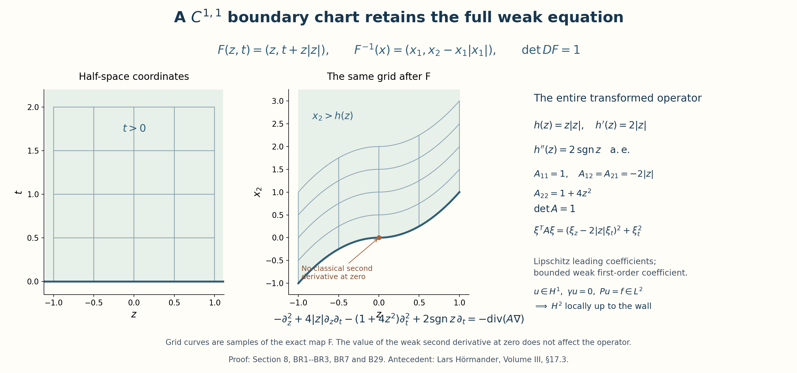

Dirichlet realizations, spectral projectors, and local extensions
The central construction in this lesson is a bounded point-evaluation functional on a spectral subspace. Elliptic estimates bound that functional, and its Hilbert-space representative produces a spectral kernel. This construction works for a sharp spectral cutoff even when the spectrum is continuous. Compactness has a separate role: on a bounded smooth Dirichlet domain it supplies an eigenbasis and a finite trace.
Throughout, \(D_j=-i\partial_j\), and Hilbert inner products are linear in the first variable. The precise analytic entry results used below are the integer half-space trace and extension construction in Section 2 of Boundary energy, local inverses, and harmonic data, supplemented by the complete real-order trace proof in Section 2 below; the local boundary \(H^1\)-to-\(H^2\) theorem Section 6 of Boundary energy, local inverses, and harmonic data, with Lipschitz principal and bounded lower coefficients; its smooth integer bootstrap Section 7 of Boundary energy, local inverses, and harmonic data; and the interior counterpart Section 8 of Local inverses and distance-weighted elliptic estimates together with the differentiated-equation argument. We check their hypotheses at each use. The other Fourier entry facts are inversion and Plancherel with inverse factor \((2\pi)^{-n}\). For the arbitrary lower-bounded extension in Section 10, the complete spectral construction is proved in Spectral measures with the original operator domain retained, Sections 1–4 of Spectral measures with the original operator domain retained: scalar measures, the bounded positive calculus, all multiplier domains, and the exact inverse correspondence back to the given operator. The bounded-domain calculus is also proved directly in Section 5. With the original inner-product convention and the spectral measure \(F_A\), these proofs give
\[ \|m(A)f\|^2=\int_{\mathbb R}|m(t)|^2\,d(F_A(t)f,f), \qquad D(A^q)=\left\{f:\int |t|^{2q}\,d(F_A(t)f,f)<\infty\right\}. \tag{DSP1} \]The analytic entry results are used with their stated hypotheses. The spectral identities just displayed have complete proofs in the companion, including the recursive domains of the original operator. The elliptic regularity-to-kernel implication and the boundary-domain implication are proved here. Nothing below identifies this second-order scalar result with a theorem for general systems or higher-order boundary conditions.
1. Weighted Dirichlet realization
Let \(n\geq1\), and let \(X\subset\mathbb R^n\) be a nonempty bounded open set with smooth boundary. Let \(r\in C^\infty(\overline X)\) be real and strictly positive. Consider the unchanged differential expression
\[ Pu=-\partial_j(g^{jk}\partial_k u)+b^j\partial_j u+cu, \qquad (u,v)_r=\int_Xu\overline v\,r\,dx. \tag{DSP2} \]Repeated indices are summed from \(1\) to \(n\). The coefficients are smooth on a neighborhood of the closure; \(g^{jk}=g^{kj}\) are real and \(g^{jk}(x)\xi_j\xi_k\geq\theta|\xi|^2\) there for some \(\theta>0\). The coefficients \(b^j,c\) may be complex. Assume exactly that \(P\) is symmetric on \(C_c^\infty(X)\) for \((\cdot,\cdot)_r\).
Exact correspondence for an arbitrary real principal matrix. The symmetric presentation above also applies to a given real matrix \(G=(G^{jk})\) whose quadratic form is positive, without changing its original coefficients or differential expression. Retain those original data \((G,B,c,r)\), and define the additional coefficient fields
\[ S^{jk}=\frac{G^{jk}+G^{kj}}2,\qquad A^{jk}=\frac{G^{jk}-G^{kj}}2,\qquad \beta^k=B^k-\sum_j\partial_j A^{jk}. \tag{DSP2a} \]For every distribution \(u\), commuting weak derivatives and pairing the \((j,k)\) and \((k,j)\) terms give
\[ \sum_{j,k}A^{jk}\partial_j\partial_k u=0,\qquad -\partial_j(G^{jk}\partial_k u)+B^k\partial_k u+cu =-\partial_j(S^{jk}\partial_k u)+\beta^k\partial_k u+cu. \tag{DSP2b} \]The product rule with smooth coefficients proves the displayed expansion for distributions as well as for smooth functions. Also \(S^{jk}\xi_j\xi_k=G^{jk}\xi_j\xi_k\) for every real \(\xi\), with exactly the same ellipticity lower bound. Thus the map \((G,B,c,r)\mapsto(S,B-\operatorname{div}A,c,r)\) is an explicit map of coefficient presentations of the same distributional operator on the same weighted space. The condition defining (DSP3) and its operator action are identical for the two presentations. Their adjoints, symmetry, self-adjoint realizations, recursive powers, and spectral projections therefore agree as operators; this follows from equality of their graphs, not from a change of coordinates or of density. Coefficient estimates can be pulled back to the given fields through (DSP2a): for every multiindex \(\alpha\),
\[ \partial^\alpha S^{jk}=\tfrac12(\partial^\alpha G^{jk} +\partial^\alpha G^{kj}),\qquad \partial^\alpha\beta^k=\partial^\alpha B^k -\tfrac12\sum_j\partial^{\alpha+e_j}(G^{jk}-G^{kj}). \tag{DSP2c} \]The triangle inequality gives their exact componentwise norm bounds, including the additional derivative of the antisymmetric part. The original fields remain available throughout this correspondence. Every subsequent formula in the symmetric presentation uses \(g=S,b=\beta\) when it is applied to these more general input data.
Define
\[ D(P_D)=\{u\in H_0^1(X):Pu\in L^2(X,r\,dx)\},\qquad P_Du=Pu. \tag{DSP3} \]There is a real number \(\mu\geq1\) such that \(T=P_D+\mu I\) is self-adjoint, \(T\geq I\), and
\[ (Tu,u)_r\geq a\|u\|_{H^1(X)}^2,\qquad \|u\|_{H^1(X)}\leq C\|Tu\|_{L^2_r},\qquad u\in D(P_D). \tag{DSP4} \]The original \(P_D\) is retained; the symbol \(T\) always records the shift explicitly.
Hilbert representation, with both functional conventions. We first give the representation argument used by the form and kernel constructions. Let \(H\) be a complex Hilbert space with inner product linear in its first argument and let \(\ell:H\to\mathbb C\) be bounded and linear. If \(\ell=0\), its representing vector is zero. Otherwise the closed affine set \(V=\{v:\ell(v)=1\}\) is nonempty. Its distance \(d\) from zero satisfies \(d\geq\|\ell\|^{-1}>0\). Choose \(v_j\in V\) with \(\|v_j\|\to d\). The midpoint belongs to \(V\), so the parallelogram identity gives
\[ \|v_j-v_k\|^2 =2\|v_j\|^2+2\|v_k\|^2-4\|(v_j+v_k)/2\|^2 \leq2\|v_j\|^2+2\|v_k\|^2-4d^2\longrightarrow0. \]Completeness and closedness give a limit \(v\in V\) with \(\|v\|=d\). For \(z\in\ker\ell\), the inequality \(\|v+t z\|^2\geq d^2\), first for all real \(t\) and then for all purely imaginary \(t\), forces \((v,z)=0\). Since \(u-\ell(u)v\in\ker\ell\), it follows that \((u,v)=\ell(u)d^2\). Thus \(h=v/d^2\) satisfies
\[ \ell(u)=(u,h),\qquad\|\ell\|=\|h\|. \]The norm equality follows from Cauchy–Schwarz and evaluation at \(u=h/\|h\|\); uniqueness follows by testing the difference of two representing vectors against itself. For a bounded conjugate-linear functional \(F\), apply this result to \(\ell(u)=\overline{F(u)}\). Its vector \(w\) satisfies \(F(u)=(w,u)\) with the same norm. This proves the exact forms of representation used below, including the equivalent inner product \(q_\mu\), without a spectral or orthonormal-basis theorem.
Proof of the realization. Integration by parts on compact interior tests gives the form
\[ q(u,v)=\int_X rg^{jk}\partial_k u\,\overline{\partial_jv}\,dx +\int_X\bigl(g^{jk}\partial_jr+rb^k\bigr)\partial_ku\,\overline v\,dx +\int_Xrcu\overline v\,dx. \tag{DSP5} \]Every term is continuous on \(H_0^1\times H_0^1\). Density extends symmetry from tests to that space. Positivity of the first term and boundedness of the other coefficients imply
\[ q(u,u)\geq r_{\min}\theta\|\nabla u\|_2^2 -C\|u\|_2\|\nabla u\|_2-C\|u\|_2^2. \]Young's inequality, \(2ab\leq\varepsilon a^2+\varepsilon^{-1}b^2\), gives a sufficiently large \(\mu\geq1\) for which \(q_\mu=q+\mu(\cdot,\cdot)_r\) controls \(\|u\|_{H^1}^2\) and also \(\|u\|_{L^2_r}^2\). It is an inner product with an equivalent complete norm. Applying the Hilbert representation theorem in this norm to \(v\mapsto(f,v)_r\) produces a unique \(u\in H_0^1\) with \(q_\mu(u,v)=(f,v)_r\) for every \(v\in H_0^1\). Interior testing says \((P+\mu)u=f\) distributionally. Conversely, if \(u\in H_0^1\) and \((P+\mu)u=f\in L^2_r\), the distributional identity extends to this form identity by density. Thus the variational operator is exactly \(T\) on (DSP3), and \(T\) maps its domain onto \(L^2_r\).
This domain is dense, since it contains \(C_c^\infty(X)\). The form identity makes \(T\) symmetric. If \(w\in D(T^*)\), solve \(Tv=T^*w\). For every \(u\in D(T)\), symmetry and adjointness give \((Tu,w-v)_r=0\). Surjectivity of \(T\) forces \(w=v\in D(T)\). Hence \(T=T^*\), in particular it is closed. Coercivity gives the first estimate in (DSP4), and Cauchy–Schwarz gives
\[ a\|u\|_{H^1}^2\leq\|Tu\|_{L^2_r}\|u\|_{L^2_r} \leq C_r\|Tu\|_{L^2_r}\|u\|_{H^1}, \]which proves the second, including the case \(u=0\). The same form lower bound proves \(T\geq I\). ∎
2. Inhomogeneous Sobolev convention
For an integer \(k\geq0\), write
\[ \overline H^k(X)=H^k(X),\qquad \|u\|_{\overline H^k(X)}^2=\sum_{|\alpha|\leq k}\|D^\alpha u\|_{L^2(X)}^2. \tag{DSP6} \]The derivatives are weak derivatives. The bar indicates this inhomogeneous norm; it does not indicate closure of \(C_c^\infty(X)\). In particular \(\overline H^1(X)\) and \(H_0^1(X)\) have different boundary conditions. Weighted and unweighted norms obey the exact comparison
\[ r_{\min}\|u\|_2^2\leq\|u\|_{L^2_r}^2\leq r_{\max}\|u\|_2^2. \tag{DSP7} \]On a compact coordinate patch the same comparison uses the minimum and maximum there and the chart Jacobian. All constants involving these comparisons retain that dependence.
For reference, all local and transformed Sobolev symbols used below have the following fixed meaning. If \(\Phi:U\to V\) is a smooth chart and \(J_\Phi=|\det D\Phi^{-1}|\), then
\[ \|u\|_{H^s_\Phi(U)}^2 :=\sum_{|\alpha|\le s}\int_V \left|D_y^\alpha(u\circ\Phi^{-1})(y)\right|^2\,dy \quad(s\in\mathbb N), \]while the weighted transformed norm is
\[ \|u\|_{L^2_{r,\Phi}(U)}^2 =\int_V|u\circ\Phi^{-1}(y)|^2 (r\circ\Phi^{-1})(y)J_\Phi(y)\,dy. \]For a compact \(K\subset\overline X\), \(H^s(K)\) denotes the fixed localized quantity obtained from a finite family of cutoffs \(\zeta_a\in C_c^\infty(U_a)\) whose regions of value one cover \(K\). The charts, cutoffs, and their larger neighborhoods remain part of this notation in each estimate. Coordinate changes of those same localized functions have the two-sided bounds proved below; arbitrary cutoffs with different outer supports need not give equivalent seminorms on all functions. For real noninteger \(s\geq0\), the localized coordinate spaces use the restriction norms (RT1)–(RT2). A finite partition covering the whole domain gives a norm equivalent to that restriction norm by the explicit extension and reconstruction below. On a smooth boundary chart, \(\gamma u\) denotes the one-sided trace on \(t=0\), taking \(H^s\) continuously to \(H^{s-1/2}\) for \(s>1/2\); \(H_0^1\) is the kernel of this trace (equivalently the \(H^1\)-closure of \(C_c^\infty(X)\)). For complete precision, put \(\Omega_a=\Phi_a(U_a\cap X)\) and \(v_a=((\zeta_a u)\circ\Phi_a^{-1})|_{\Omega_a}\). The aggregate just specified is the sum
\[ \|u\|_{H^s(K;\mathcal A,\zeta)} =\sum_a N_{s,\Omega_a}(v_a),\qquad N_{k,\Omega}(v)= \left(\sum_{|\alpha|\leq k}\int_\Omega|D_y^\alpha v|^2\,dy\right)^{1/2} \quad(k\in\mathbb N_0), \tag{DSP7a} \]where at a noninteger \(s\geq0\) the symbol \(N_{s,\Omega}\) instead means the restriction infimum in (RT2), with the whole-space norm (RT1). The abbreviation \(\|u\|_{H^s(K)}\) retains the fixed atlas, cutoffs and domains \(\Omega_a\). It is a seminorm of functions on those fixed neighborhoods; it is not determined by their values on \(K\) alone. The integer formula keeps every coefficient in (DSP6) equal to one.
These definitions apply to every occurrence of transformed \(H^s\), trace spaces, and local \(H^s(K)\) below.
Real-order trace and boundary density
The following argument proves the real-order trace assertion, its fixed right inverse, the coordinate comparisons, and the zero-trace energy-space identity. Its numbered parts and RT formula labels belong to this argument. The derivative-sum norm (DSP6) retains its original coefficients.
Trace proof 1. Spaces and precise statement
Put \(D_j=-i\partial_j\),
\[ \widehat v(\xi)=\int_{\mathbb R^N}e^{-ix\cdot\xi}v(x)\,dx, \qquad v(x)=(2\pi)^{-N}\int e^{ix\cdot\xi}\widehat v(\xi)\,d\xi, \]and define the Bessel-potential norm by
\[ \|v\|_{H^s(\mathbb R^N)}^2 =(2\pi)^{-N}\int_{\mathbb R^N}(1+|\xi|^2)^s|\widehat v(\xi)|^2\,d\xi. \tag{RT1} \]For \(s\geq0\) and an open set \(X\), \(H^s(X)\) is the restriction space with norm
\[ \|u\|_{H^s(X),\mathrm{res}} =\inf\{\|U\|_{H^s(\mathbb R^n)}:U|_X=u\}. \tag{RT2} \]The kernel of restriction is closed: convergence in (RT1) implies convergence in \(L^2\), and a limit of functions zero almost everywhere on \(X\) is zero there. Thus (RT2) is a Hilbert quotient norm. Restriction is equality almost everywhere, or equivalently equality of distributions on \(X\).
For integer \(k\geq0\), the actual squared norm in (DSP6) remains \(\sum_{|\alpha|\leq k}\|D^\alpha u\|_{L^2(X)}^2\). Already on the whole space its relation to (RT1) is the explicit identity
\[ \|U\|_{H^k(\mathbb R^n)}^2 =\sum_{j=0}^k\binom{k}{j} \sum_{|\alpha|=j}\frac{j!}{\alpha!}\|D^\alpha U\|_2^2. \tag{RT3} \]On a smooth domain the restriction and weak-derivative spaces agree, with equivalent norms, by the integer reflection extension in Section 2 of Boundary energy, local inverses, and harmonic data and finite smooth localization. The coordinate estimates proved below justify that localization. Equation (RT3) specifies the coefficients of the whole-space comparison; no equality between the quotient norm and the derivative-sum norm on \(X\) is asserted.
Let \(X\) be bounded with smooth boundary. For every real \(s>1/2\) there is a unique bounded trace
\[ \gamma_X:H^s(X)\longrightarrow H^{s-1/2}(\partial X) \tag{RT4} \]that agrees with boundary restriction for functions smooth on a neighborhood of \(\overline X\). The surface space and its chart norm are defined in Trace proof 5, with an explicit comparison to surface measure. There is a bounded linear right inverse \(L_X\), and one fixed choice of \(L_X\) works simultaneously at all these orders, with an order-dependent norm. In every localized flattened chart the trace is the limit of the positive slices in \(H^{s-1/2}\), independent of the extension in (RT2). Finally,
\[ \ker(\gamma_X:H^1(X)\to H^{1/2}(\partial X)) =\overline{C_c^\infty(X)}^{\,H^1(X)}=H_0^1(X). \tag{RT5} \]We now prove all assertions in (RT4)–(RT5).
Trace proof 2. Whole-space slices and quotient independence
Write \(n=d+1\), \(x=(z,t)\), \(\xi=(\zeta,\tau)\), and retain the inhomogeneous factor \(\lambda(\zeta)=(1+|\zeta|^2)^{1/2}\). For \(s>1/2\), put
\[ C_s=\int_{\mathbb R}(1+r^2)^{-s}\,dr =\frac{\sqrt\pi\,\Gamma(s-1/2)}{\Gamma(s)}. \tag{RT6} \]For completeness, the gamma evaluation follows by inserting \((1+r^2)^{-s}=\Gamma(s)^{-1}\int_0^\infty a^{s-1}e^{-a(1+r^2)}\,da\), applying Tonelli, and using \(\int e^{-ar^2}dr=\sqrt{\pi/a}\). In particular
\[ \int_{\mathbb R}(\lambda^2+\tau^2)^{-s}\,d\tau =C_s\lambda^{1-2s}. \tag{RT7} \]For \(U\in H^s(\mathbb R^{d+1})\), weighted Cauchy–Schwarz and Fubini define, for almost every \(\zeta\) and every \(t\),
\[ \widehat{T_tU}(\zeta) =\frac1{2\pi}\int_{\mathbb R}e^{it\tau}\widehat U(\zeta,\tau)\,d\tau. \tag{RT8} \]The integral is absolutely convergent for those \(\zeta\). Equations (RT7)–(RT8) give
\[ \begin{aligned} \|T_tU\|_{H^{s-1/2}(\mathbb R^d)}^2 &\leq (2\pi)^{-d-2}\int \lambda^{2s-1} C_s\lambda^{1-2s} \int(\lambda^2+\tau^2)^s|\widehat U(\zeta,\tau)|^2\,d\tau\,d\zeta\\ &=\frac{C_s}{2\pi}\|U\|_{H^s(\mathbb R^{d+1})}^2. \end{aligned} \tag{RT9} \]This is uniform for all real \(t\).
Let \(\mathcal T_hU(z,t)=U(z,t+h)\). Its Fourier multiplier is \(e^{ih\tau}\), so dominated convergence in (RT1) proves \(\mathcal T_hU\to U\) in \(H^s\). Formula (RT8) gives \(T_{t+h}U=T_t\mathcal T_hU\). Consequently (RT9) proves that \(t\mapsto T_tU\) is continuous into \(H^{s-1/2}(\mathbb R^d)\).
This continuous family is a representative of the actual slices of \(U\). Indeed choose Schwartz \(U_j\to U\) in \(H^s\). Such density follows by approximating \(\widehat U\) in the weighted \(L^2\) space by smooth compactly supported functions; the inverse Fourier transforms are Schwartz. On any bounded interval \(I\), (RT9) gives convergence of \(T_tU_j\) to \(T_tU\) in \(L^2(I;L^2(\mathbb R^d))\), while \(U_j\to U\) in \(L^2(\mathbb R^{d+1})\). Fourier inversion identifies the slices for each Schwartz approximant, and uniqueness of an \(L^2\) limit identifies them almost everywhere for \(U\).
Suppose now that \(U=0\) almost everywhere on \(\{t>0\}\). The preceding identification implies \(T_tU=0\) for almost every \(t>0\); continuity implies this for every \(t>0\), and then for \(t=0\). Thus two full-space extensions of the same \(u\in H^s(\mathbb R^{d+1}_+)\) have the same \(T_0\), and even the same continuous slice family for \(t\geq0\). Define \(\gamma_+u=T_0U\) using either extension and take the infimum in (RT9):
\[ \sup_{t\geq0}\|u(\cdot,t)\|_{H^{s-1/2}} \leq\left(\frac{C_s}{2\pi}\right)^{1/2} \|u\|_{H^s(\mathbb R^{d+1}_+),\mathrm{res}}, \qquad u(\cdot,t)\longrightarrow\gamma_+u\text{ in }H^{s-1/2} \quad(t\downarrow0). \tag{RT10} \]The slice notation in (RT10) means this continuous representative. This argument proves quotient independence without presupposing a trace on the restriction space.
For \(d=0\), interpret \(\mathbb R^0\) as one point with measure one, \(\lambda=1\), and its \(H^q\) norm as absolute value for every \(q\). Equations (RT6)–(RT10) then are the same one-variable proof, with no tangential integration and with \((2\pi)^0=1\).
Trace proof 3. The same Poisson lift at every real order
Choose once and for all \(\chi\in C^\infty(\mathbb R)\) with \(\chi(r)=0\) for \(r\leq-2\), \(\chi(r)=1\) for \(r\geq-1\), and \(0\leq\chi\leq1\), and put \(\vartheta(r)=\chi(r)e^{-r}\). Then \(\vartheta\) is Schwartz, \(\vartheta(0)=1\), and \(\vartheta(r)=e^{-r}\) on \([0,\infty)\). For \(f\in H^{s-1/2}(\mathbb R^d)\), define \(E f\) by its full Fourier transform
\[ \widehat{E f}(\zeta,\tau) =\lambda(\zeta)^{-1}\widehat\vartheta\bigl(\tau/\lambda(\zeta)\bigr) \widehat f(\zeta). \tag{RT11} \]Change variables \(\tau=\lambda\rho\) in (RT1). There is the exact identity
\[ \|Ef\|_{H^s(\mathbb R^{d+1})}^2 =K_{s,\vartheta}\|f\|_{H^{s-1/2}(\mathbb R^d)}^2, \qquad K_{s,\vartheta}=\frac1{2\pi}\int_{\mathbb R}(1+\rho^2)^s|\widehat\vartheta(\rho)|^2\,d\rho<\infty. \tag{RT12} \]Normal Fourier inversion, first for smooth data and then by (RT12), gives
\[ \mathcal F_z(Ef)(\zeta,t)=\vartheta(\lambda t)\widehat f(\zeta), \qquad \mathcal F_z(Lf)(\zeta,t)=e^{-\lambda t}\widehat f(\zeta) \quad(t>0),\qquad Lf=(Ef)|_{t>0}. \tag{RT13} \]In (RT8), \((2\pi)^{-1}\int\widehat\vartheta(\rho)d\rho=\vartheta(0)=1\); hence \(\gamma_+Lf=f\). Equivalently, dominated convergence applied to \(|e^{-\lambda t}-1|^2\lambda^{2s-1}|\widehat f|^2\) proves the same boundary limit. Equations (RT12)–(RT13) prove
\[ \|Lf\|_{H^s(\mathbb R^{d+1}_+),\mathrm{res}} \leq K_{s,\vartheta}^{1/2}\|f\|_{H^{s-1/2}},\qquad\gamma_+L=I \quad\text{for every real }s>1/2. \tag{RT14} \]The formula for \(L\) is exactly the positive-half-space lift in Section 2 of Boundary energy, local inverses, and harmonic data, formula (B4), independent of \(s\). Its full-space extension (RT11) was chosen smooth across \(t=0\); none of the estimates assumes that an even reflection of the Poisson exponential has arbitrarily high regularity.
Trace proof 4. Fractional coordinate estimates with their dependencies
We prove the coordinate facts needed for both the domain and the surface. This part is in dimension \(N\geq1\). For \(0<\sigma<1\), set
\[ [v]_{\sigma,N}^2=\iint_{\mathbb R^N\times\mathbb R^N} \frac{|v(x)-v(y)|^2}{|x-y|^{N+2\sigma}}\,dx\,dy. \]Plancherel for translations and Tonelli give the exact identity
\[ [v]_{\sigma,N}^2 =c_{N,\sigma}(2\pi)^{-N}\int |\xi|^{2\sigma}|\widehat v(\xi)|^2\,d\xi, \qquad c_{N,\sigma}= \frac{2\pi^{N/2}\Gamma(1-\sigma)}{\sigma\,4^\sigma\Gamma(N/2+\sigma)}. \tag{RT15} \]Here is the constant calculation. The inner translation integral is \(\int |e^{ih\cdot\xi}-1|^2|h|^{-N-2\sigma}dh\). Rotations and scaling reduce it to \(|\xi|^{2\sigma}\) times its value at the first coordinate unit vector. Insert
\[ |h|^{-N-2\sigma} =\Gamma(N/2+\sigma)^{-1} \int_0^\infty a^{N/2+\sigma-1}e^{-a|h|^2}\,da. \]The Gaussian integral of \(2-2\cos h_1\) is \(2(\pi/a)^{N/2}(1-e^{-1/(4a)})\). Substituting \(r=1/(4a)\) leaves \(2\pi^{N/2}4^{-\sigma}\Gamma(N/2+\sigma)^{-1} \int_0^\infty r^{-\sigma-1}(1-e^{-r})dr\). Integration by parts evaluates the final integral as \(\Gamma(1-\sigma)/\sigma\); its boundary terms vanish because \(0<\sigma<1\). This proves (RT15), including its constants. It holds for every \(L^2\) function, with both sides allowed to be infinite, by Plancherel for the \(L^2\) translation difference and Tonelli.
Let \(m\geq0\) be an integer and define
\[ \mathcal E_{m,\sigma}(v) =\sum_{|\alpha|\leq m}\|D^\alpha v\|_2^2 +c_{N,\sigma}^{-1}\sum_{|\alpha|=m}[D^\alpha v]_{\sigma,N}^2. \]Fourier transformation, the multinomial formula, and (RT15) give
\[ \frac1{2^{m+\sigma}m!}\|v\|_{H^{m+\sigma}}^2 \leq\mathcal E_{m,\sigma}(v) \leq(m+2)\|v\|_{H^{m+\sigma}}^2. \tag{RT16} \]Indeed the multiplier of \(\mathcal E\) is \(P_m(\xi)+|\xi|^{2\sigma}Q_m(\xi)\), where \(P_m=\sum_{|\alpha|\leq m}\xi^{2\alpha}\) and \(Q_m=\sum_{|\alpha|=m}\xi^{2\alpha}\). The inequalities \(|\xi|^{2m}/m!\leq Q_m\leq|\xi|^{2m}\) and \(P_m\leq(m+1)\max(1,|\xi|^{2m})\), split at \(|\xi|=1\), prove exactly (RT16). The case \(m=0\) uses \(0!=1\).
We next give a local composition bound that does not assume the desired fractional invariance. Let \(\Psi:V\to W\) be a smooth diffeomorphism, and let \(b\in C_c^\infty(V_0)\), where \(V_0\Subset V\). Choose the smaller coordinate set so that for \(y,z\in V_0\)
\[ L^{-1}|y-z|\leq|\Psi(y)-\Psi(z)|\leq L|y-z|, \qquad J=\sup_{\Psi(V_0)}|\det D\Psi^{-1}|<\infty, \tag{RT17} \]with \(L\geq1\). Smooth coordinate maps admit such sets: on a sufficiently small ball about any point, the derivative differs from its invertible value at the center by less than half that value's smallest singular value. Integrating the derivative on line segments proves (RT17); finitely many such smaller sets cover a prescribed compact support. Thus using several such sets entails only a finite smooth partition.
Write \(B=\|b\|_\infty\), \(M=\|\nabla b\|_\infty\), \(\delta=\operatorname{dist}(\operatorname{supp}b,\mathbb R^N\setminus V_0)>0\), and let \(\omega_{N-1}\) be the area of the unit sphere in \(\mathbb R^N\). Set
\[ A_{b,\sigma}=\omega_{N-1} \left(\frac{M^2}{2-2\sigma}+\frac{4B^2}{2\sigma}\right). \]For \(v(y)=b(y)f(\Psi(y))\) on \(V_0\), extended by zero outside, change of variables gives
\[ \|v\|_2^2\leq B^2J\|f\|_2^2, \]and direct separation of differences gives
\[ [v]_{\sigma,N}^2 \leq2B^2L^{N+2\sigma}J^2[f]_{\sigma,N}^2 +\left(2A_{b,\sigma}J+ \frac{\omega_{N-1}}{\sigma}\delta^{-2\sigma}B^2J\right)\|f\|_2^2. \tag{RT18} \]To verify every term, on \(V_0\times V_0\) use
\[ |b(y)f(\Psi(y))-b(z)f(\Psi(z))|^2 \leq2B^2|f(\Psi(y))-f(\Psi(z))|^2 +2|b(y)-b(z)|^2|f(\Psi(z))|^2. \]Two Jacobians and (RT17) bound the first integral. For the second, extend \(b\) smoothly by zero; then \(|b(y)-b(z)|\leq\min(M|y-z|,2B)\). Integration on \(|y-z|\leq1\) and \(|y-z|>1\) yields \(A_{b,\sigma}\), followed by one Jacobian. Finally the two cross regions with one point outside \(V_0\) contribute at most \(2\|v\|_2^2\omega_{N-1}\int_\delta^\infty r^{-1-2\sigma}dr\). This is the last term of (RT18). Thus no boundary term in the zero extension of a localized composition was omitted.
For a cutoff \(a\in C_c^\infty(V_0)\), apply the usual chain and product rules to \(a(f\circ\Psi)\). In ordinary derivative notation their exact coefficients can be generated recursively by
\[ b_{0,0}=a,\qquad b_{\alpha+e_j,\beta} =\partial_jb_{\alpha,\beta} +\sum_{\ell=1}^N b_{\alpha,\beta-e_\ell}\partial_j\Psi_\ell, \qquad \partial^\alpha(a(f\circ\Psi)) =\sum_{|\beta|\leq|\alpha|}b_{\alpha,\beta} ((\partial^\beta f)\circ\Psi). \tag{RT19} \]Absent coefficients are zero; for each multiindex fix any ordered sequence of the indicated differentiations. The product rule proves this recursion by induction. The norms of \(D^\alpha v\) and \(\partial^\alpha v\) are equal, so these ordinary derivative identities do not change the convention \(D=-i\partial\).
For integer order, change of variables applied to each term of (RT19) gives the bounded composition operator in \(H^m\). For order \(m+\sigma\), use (RT18) on each term of each order-\(m\) derivative, then (RT16). For every \(|\beta|\leq m\), Plancherel also gives
\[ \|D^\beta f\|_2^2\leq\|f\|_{H^{m+\sigma}}^2, \qquad [D^\beta f]_{\sigma,N}^2 \leq c_{N,\sigma}\|f\|_{H^{m+\sigma}}^2. \]Using \(|\sum_{j=1}^{r}v_j|^2\leq r\sum|v_j|^2\) for each finite sum completes the estimate
\[ \|a(f\circ\Psi)\|_{H^r(\mathbb R^N)} \leq C_{r,a,\Psi,V_0}\|f\|_{H^r(\mathbb R^N)},\qquad r\geq0, \tag{RT20} \]where the left side is the zero extension just used. Its squared constant is obtained by the finite sums in (RT19), (RT18), and (RT16). In particular it depends only on \(N,m,\sigma\), the displayed \(L,J,\delta\), the derivatives of \(a\) through order \(m+1\), and those of \(\Psi\) through order \(m+1\). At an integer order no fractional constant occurs and derivatives through order \(m\) suffice. Applying the same proof to inverse coordinate maps gives the reverse local comparisons. General compactly supported coordinate changes follow by the finite subdivision explained after (RT17).
All these identities were initially proved on smooth inputs. Density of Schwartz functions in (RT1), already proved in Trace proof 2, extends (RT20) to \(H^r\). The resulting extension is the actual composition almost everywhere, since it converges in \(L^2\) on the support by the Jacobian bound. Thus its weak derivatives are also those supplied by (RT19).
Multiplication by a fixed compact smooth cutoff is (RT20) with \(\Psi=I\). Restrictions of \(C_c^\infty(\mathbb R^N)\) are dense in every quotient (RT2): after Schwartz approximation, multiply a fixed Schwartz function by cutoffs \(\theta(x/R)\). The difference tends to zero in every integer \(H^k\) by the product rule, the rapid decay of all derivatives, and dominated convergence; choosing \(k\geq r\) and using (RT1) gives convergence in \(H^r\). Approximate a chosen full-space extension and restrict. This also proves density of functions smooth on a neighborhood of \(\overline X\) in \(H^r(X)\).
Trace proof 5. Surface norms and atlas independence
For \(n\geq2\), put \(d=n-1\). Fix a finite smooth boundary atlas \(\kappa_a:O_a\subset\mathbb R^d\to\partial X\), and a nonnegative smooth partition \(\lambda_a\) on \(\partial X\) subordinate to relatively compact parts of these charts, with \(\sum_{a=1}^A\lambda_a=1\). For \(q\geq0\), define
\[ \|f\|_{H^q(\partial X),\mathcal A}^2 =\sum_{a=1}^A \|((\lambda_af)\circ\kappa_a)^0\|_{H^q(\mathbb R^d)}^2, \tag{RT21} \]where superscript zero means extension by zero outside \(O_a\). The surface space consists of \(L^2(dS)\) functions with finite (RT21).
Let \(J_a(z)=\sqrt{\det(D\kappa_a(z)^TD\kappa_a(z))}\). This is positive and smooth. If \(j_{\min},j_{\max}\) are the minimum and maximum of all \(J_a\) on the compact supports concerned, change of variables gives the exact order-zero formula and bounds
\[ \begin{aligned} \|f\|_{H^0(\partial X),\mathcal A}^2 &=\int_{\partial X}|f(x)|^2 \sum_{a:x\in\kappa_a(O_a)} \frac{\lambda_a(x)^2}{J_a(\kappa_a^{-1}(x))}\,dS(x),\\ \frac1{A j_{\max}}\|f\|_{L^2(dS)}^2 &\leq\|f\|_{H^0(\partial X),\mathcal A}^2 \leq\frac1{j_{\min}}\|f\|_{L^2(dS)}^2. \end{aligned} \tag{RT22} \]Terms with \(\lambda_a=0\) are zero. The inequalities use \(A^{-1}\leq\sum\lambda_a^2\leq1\). If a positive surface weight \(w\) is used, its exact measure comparison is \(w_{\min}\|f\|_{L^2(dS)}^2\leq\|f\|_{L^2(wdS)}^2\leq w_{\max}\|f\|_{L^2(dS)}^2\); substituting these bounds in (RT22) retains both the weight and the chart Jacobians.
To prove atlas independence, take another chart partition \((\widetilde\kappa_b,\widetilde\lambda_b)\). In a \(b\)-chart write
\[ (\widetilde\lambda_b f)\circ\widetilde\kappa_b =\sum_a (\widetilde\lambda_b\circ\widetilde\kappa_b) \bigl[((\lambda_a f)\circ\kappa_a) \circ(\kappa_a^{-1}\circ\widetilde\kappa_b)\bigr]. \tag{RT23} \]For each overlap insert an extra smooth cutoff equal to one on the compact intersection of the two original supports and supported inside the overlap. The summands are then exactly the localized compositions of (RT20), in dimension \(d\), at order \(q\). The number of summands is finite. Equation (RT20) therefore bounds the new norm by the old; exchanging the atlases proves the reverse bound. The constants have exactly the dependence described in Trace proof 4, including the overlap cutoffs and their distances to chart edges.
For completeness, (RT21) defines a complete space: a Cauchy sequence converges in \(L^2(dS)\) by (RT22); each localized coordinate sequence converges in \(H^q(\mathbb R^d)\), whose \(L^2\) limit is the localization of that same surface function by change of variables. The limits therefore have finite (RT21), and convergence holds in that norm. Smooth surface functions are dense. To see this, each compactly supported coordinate function \(((\lambda_af)\circ\kappa_a)^0\) can be convolved with a smooth approximate identity and then multiplied by a fixed cutoff equal to one near its original support. Approximation in \(H^q\) follows from Fourier dominated convergence for convolution and bounded cutoff multiplication (RT20); for sufficiently small convolution radius the support remains in \(O_a\). Push these smooth compact functions to the surface and sum over \(a\). Formula (RT23) and (RT20) show convergence in the surface norm, and the limiting sum is \(\sum_a\lambda_af=f\).
In dimension \(n=1\), a compact smooth boundary is a finite zero-dimensional manifold: its single-point coordinate neighborhoods form an open cover, so compactness gives finitely many points. Define every \(H^q(\partial X)\) as functions on these points with the sum of squared absolute values. Surface measure is counting measure. There are no fractional coordinate changes to prove in dimension zero.
Trace proof 6. Curved-boundary trace, independence, and lifts
Take the fixed boundary atlas from Trace proof 5 as the restriction of ambient smooth flattenings \(\Phi_a:U_a\to V_a\subset\mathbb R^{d+1}\), with \(\Phi_a(X\cap U_a)=V_a\cap\{t>0\}\) and \(\kappa_a(z)=\Phi_a^{-1}(z,0)\). Extend each \(\lambda_a\) to a compactly supported smooth ambient cutoff \(\eta_a\in C_c^\infty(U_a)\) with \(\eta_a|_{\partial X}=\lambda_a\). This is achieved by multiplying its coordinate function on \(t=0\) by a smooth normal cutoff equal to one near zero. All supports remain in the chosen coordinate patches.
For a full-space \(H^s\) extension \(U\) of \(u\), set
\[ v_a(y)= \begin{cases} (\eta_aU)(\Phi_a^{-1}(y)),&y\in V_a\text{ (the chart range)},\\ 0,&\text{elsewhere}. \end{cases} \tag{RT24} \]By (RT20), \(\|v_a\|_{H^s}\leq C_a\|U\|_{H^s}\). Its flat trace \(T_0v_a\) is bounded by (RT9). For smooth \(U\), it is precisely \((\lambda_aU|_{\partial X})\circ\kappa_a\), extended by zero.
Approximate a general \(U\) in \(H^s\) by \(C_c^\infty\) functions. The traces of these approximants form a Cauchy sequence in the surface norm (RT21), because
\[ \|U|_{\partial X}\|_{H^{s-1/2}(\partial X),\mathcal A}^2 \leq\frac{C_s}{2\pi}\sum_a C_a^2\|U\|_{H^s(\mathbb R^n)}^2 \tag{RT25} \]holds for their differences. Completeness gives a limit. Bounded localization and (RT20) show that its \(a\)-coordinate component is exactly \(T_0v_a\), so it is independent of the approximating sequence.
If \(U\) vanishes on \(X\), each localized function \(v_a\) in (RT24) vanishes on the entire positive half-space: inside its chart this follows from the flattening, and outside the chart it follows from its zero definition. Trace proof 2 gives \(T_0v_a=0\). Hence the resulting surface limit is zero by (RT21). It follows that the boundary value depends only on \(u=U|_X\). Taking the infimum over \(U\) in (RT25) proves (RT4) with
\[ \|\gamma_Xu\|_{H^{s-1/2}(\partial X),\mathcal A} \leq\left(\frac{C_s}{2\pi}\sum_a C_a^2\right)^{1/2} \|u\|_{H^s(X),\mathrm{res}}. \tag{RT26} \]Smooth restrictions are dense by Trace proof 4, so this continuous extension of smooth restriction is unique. Consequently changing the flattenings or partition yields exactly the same trace, with the equivalent surface norms of Trace proof 5. The positive-slice limit in each cutoff chart is exactly (RT10) applied to \(v_a|_{t>0}\). This proves the asserted local one-sided interpretation at every real \(s>1/2\).
Here are also the precise local Sobolev comparisons implicit in the notation of Section 2. Choose a finite partition of unity on a neighborhood of \(\overline X\), subordinate to boundary and interior patches, and in each patch take the corresponding localized coordinate restriction norm of order \(s\). Such an ambient partition can retain boundary values \(\lambda_a\): choose the nonnegative extensions above, divide by their positive sum near the boundary, multiply the resulting functions by a collar cutoff equal to one on a smaller boundary neighborhood, and partition the remaining interior term. Equation (RT20), applied to any extension \(U\), bounds the finite localized norm by \(C\|u\|_{H^s(X),\mathrm{res}}\) after taking the infimum. Conversely extend each localized coordinate restriction to the whole coordinate space with norm within \(\varepsilon\) of its quotient infimum. Multiply by a fixed slightly larger cutoff equal to one on the original localized support and pull back by the inverse chart, extending by zero beyond that chart. Equation (RT20) bounds each resulting global \(H^s\) function. The sum restricts to \(u\), since the original cutoffs sum to one. The triangle inequality and then \(\varepsilon\downarrow0\) bound (RT2) by the finite localized norm. This proves both directions, with cutoff, Jacobian, and chart constants retained. For an estimate near a compact subset, fix the localizing functions and larger patch first and apply this construction to those localized functions; the constants retain both choices. No equivalence between seminorms on unrelated larger neighborhoods is needed. Interior pieces are treated by whole-space coordinate charts and the same proof.
To construct a right inverse, first choose once and for all \(\rho_a\in C_c^\infty(V_a)\) whose value on \(t=0\) is one on a neighborhood of the fixed compact set \(\operatorname{supp}((\lambda_a\circ\kappa_a)^0)\). These cutoffs depend only on the atlas and partition, not on the datum or the Sobolev order. For \(f\in H^{s-1/2}(\partial X)\), put \(f_a=((\lambda_af)\circ\kappa_a)^0\), whose support lies in that fixed set, and take \(Ef_a\) from (RT11). Define the global function
\[ W_a(x)= \begin{cases} (\rho_aEf_a)(\Phi_a(x)),&x\in U_a,\\ 0,&x\notin U_a, \end{cases} \qquad L_Xf=\left.\sum_aW_a\right|_X. \tag{RT27} \]Equations (RT12), (RT20), and the finite sum give
\[ \|L_Xf\|_{H^s(X),\mathrm{res}} \leq K_{s,\vartheta}^{1/2} \left(\sum_a C_{a,s}'{}^2\right)^{1/2} \|f\|_{H^{s-1/2}(\partial X),\mathcal A}, \tag{RT28} \]where \(C_{a,s}'\) is the bounded composition-and-cutoff constant for the \(a\)-term. For smooth \(f\), direct evaluation and \(\vartheta(0)=1\) give \(\gamma_XW_a=\lambda_af\); hence \(\gamma_XL_Xf=f\). Surface density and (RT26), (RT28) extend this identity to all \(f\). The choices of \(\vartheta\), all cutoffs, and the atlas were fixed independently of \(s\). Therefore the operator (RT27) is a single right inverse on all real scales \(s>1/2\), with the displayed order-dependent bounds. This construction also works at each boundary point when \(n=1\), using the one-variable instance of (RT11).
Trace proof 7. The zero-trace energy space
For clarity we prove (RT5) with the derivative-sum \(H^1\) norm of (DSP6), which is equivalent to (RT2). The inclusion of the closure into the kernel follows immediately from the trace bound and the zero trace of every compact interior smooth function.
For the reverse inclusion, first work on the flat half-space with a compactly supported \(v\in H^1(\mathbb R^{d+1}_+)\) whose trace is zero. Write \(v^0\) for zero extension. Smooth approximation by restrictions of whole-space tests, proved in Trace proof 4, and integration by parts give the distribution formulas
\[ \partial_t v^0=(\partial_t v)^0+(\gamma_+v)\otimes\delta_0, \qquad \partial_{z_j}v^0=(\partial_{z_j}v)^0. \tag{RT29} \]Indeed, for a smooth approximant and a compact smooth test \(\psi\), integration on \(t>0\) yields \(-\int v\partial_t\psi=\int(\partial_tv)\psi+\int v(z,0)\psi(z,0)dz\). The volume terms converge by \(H^1\) convergence; the boundary term converges by (RT10) at \(s=1\), and the test boundary restriction is smooth compactly supported. This proves the normal formula, with its positive sign. Tangential integration has no boundary term and proves the other formulas. Since the trace is zero, every derivative on the right of (RT29) is \(L^2\), so \(v^0\in H^1(\mathbb R^{d+1})\).
Set \(v_\varepsilon(z,t)=v^0(z,t-\varepsilon)\). It vanishes for \(t<\varepsilon\), and Fourier dominated convergence gives \(v_\varepsilon\to v^0\) in \(H^1\). Convolve it with a compact smooth mollifier of radius less than \(\varepsilon/2\), choosing its radius sufficiently small that the \(H^1\) convolution error is less than \(\varepsilon\). The resulting smooth function is supported in \(t\geq\varepsilon/2\) and converges to \(v^0\) in \(H^1\). The original compact support and sufficiently small translations and radii keep it within any fixed slightly larger coordinate neighborhood. A fixed cutoff equal to one near the original support, if needed, preserves convergence by (RT20). Thus the restrictions approximate \(v\) by compact interior smooth functions.
For a zero-trace \(u\in H^1(X)\), use a finite smooth partition subordinate to boundary and interior patches. Each boundary-localized pullback has zero flat trace by (RT24)–(RT26) and is approximated by the preceding construction. Pull those approximants back by the smooth flattening and extend by zero beyond its compact patch. They are \(C_c^\infty(X)\), and (RT20) at order one proves their convergence in \(H^1(X)\). The interior-localized pieces are approximated by ordinary mollification with radius smaller than their distance from the boundary. Summing the finite approximations proves that \(u\) belongs to the closure in (RT5).
Finally, (RT29) and this localization show the matching support statement when it is used: a zero-trace \(u\) has \(u^0\in H^1(\mathbb R^n)\), supported in \(\overline X\). Conversely, if \(U\in H^1(\mathbb R^n)\) is supported in \(\overline X\), its localized pullbacks vanish on the negative side. The continuous slice family in Trace proof 2 has zero negative-side limit, so its common value at zero is zero. Thus \(\gamma_X(U|_X)=0\). Smooth boundaries have Lebesgue measure zero by their finite graph cover and Fubini, so zero extension introduces no unspecified values on a set of positive measure. This completes the proof of the full real-order trace theorem and the exact energy-kernel assertion.
3. Boundary regularity
For every integer \(k\geq0\),
\[ u\in D(P_D),\quad Pu\in\overline H^k(X) \ \Longrightarrow\ u\in\overline H^{k+2}(X), \qquad \|u\|_{\overline H^{k+2}}\leq C_k\bigl(\|Pu\|_{\overline H^k}+\|u\|_{L^2_r}\bigr). \tag{DSP8} \]For the explicitly shifted operator this becomes
\[ \|u\|_{\overline H^{k+2}}\leq C_{k,\mu}\|Tu\|_{\overline H^k}, \qquad u\in D(T),\quad Tu\in\overline H^k. \tag{DSP9} \]Proof. Begin with the known \(u\in H_0^1\). In each flattened boundary chart the transformed leading matrix is real positive definite and smooth, and all transformed lower coefficients are smooth and bounded on a smaller patch. The density changes by the positive Jacobian. The trace remains zero by the trace and coordinate-change construction in Section 2 of Boundary energy, local inverses, and harmonic data. Thus Section 6 of Boundary energy, local inverses, and harmonic data applies, including its bounded complex lower terms, and yields the local \(H^2\) estimate in terms of \(Pu\in L^2\) and \(u\in H^1\). Its proof first tangentially mollifies an \(H^1\) function, recovers its second normal derivative from the equation, and only then applies the strong estimate; it makes no assumption of the sought \(H^2\) regularity. The interior theorem applies on interior patches. A finite cover gives
\[ \|u\|_{H^2}\leq C(\|Pu\|_2+\|u\|_{H^1}). \]The form estimate (DSP4), with \(Tu=Pu+\mu u\), bounds the final term by \(C(\|Pu\|_2+\|u\|_2)\). This proves \(k=0\) in (DSP8).
Here is the full higher-order induction, including the normal sign. In flat coordinates write the transformed expression, renaming its coefficients locally, as
\[ P=\sum_{j,k}g^{jk}D_jD_k+\sum_k\ell^kD_k+c, \qquad \ell^k=\sum_jD_jg^{jk}+ib^k \tag{DSP10} \]when it is written in the divergence form (DSP2). A coordinate change can modify the displayed \(\ell^k\), but preserves this positive sign of the principal \(D_jD_k\) terms. The exact equation for the pure normal derivative is
\[ D_n^2u=(g^{nn})^{-1}\left(Pu- \sum_{(j,k)\ne(n,n)}g^{jk}D_jD_ku- \sum_k\ell^kD_ku-cu\right). \tag{DSP11} \]Assume inductively that \(u\in H^{k+1}\) on a slightly larger chart and \(Pu\in H^k\). For a purely tangential multiindex \(\beta\) of length \(k\), \(D_z^\beta u\in H^1\) has zero trace. For each monomial \(a_\alpha D^\alpha\) of \(P\), the product rule reads
\[ [D_z^\beta,a_\alpha D^\alpha]u =\sum_{0<\delta\leq\beta}{\beta\choose\delta} (D_z^\delta a_\alpha)D^{\alpha+\beta-\delta}u. \tag{DSP12} \]The derivatives on \(u\) have order at most \(k+1\). To make the normal induction explicit, write a target multiindex as \(\gamma=(\gamma',q)\), \(|\gamma|=k+2\), with \(q\ge3\), and set \(\delta=(\gamma',q-2)\), so \(|\delta|=k\). Apply \(D^\delta\) to (DSP11). For each coefficient \(a\) in the right-hand side, Leibniz gives
\[ D^\delta(aD^\eta u)=aD^{\delta+\eta}u+ \sum_{0<\zeta\le\delta}{\delta\choose\zeta} (D^\zeta a)D^{\delta-\zeta+\eta}u . \tag{DSP12a} \]In the first term, the \(Pu\) contribution is \(D^\delta Pu\), bounded by \(\|Pu\|_{H^k}\). For every principal term with \((j,\ell)\ne(n,n)\), the derivative \(D^{\delta+e_j+e_\ell}u\) has at most \(q-1\) normal factors (at most \(q-2\) if both indices are tangential); the lower-order terms have at most \(q-1\) as well. These are controlled by the induction hypothesis on \(q\). Every coefficient-hit term in the sum has
\[ |\delta-\zeta+\eta|\le k+1 \]because \(|\zeta|\ge1\) and \(|\eta|\le2\); hence it is controlled by the already established \(H^{k+1}\) bound. If \(G_{k,q}\) denotes the \(L^2\)-norm of all order-\(k+2\) derivatives with at most \(q\) normals on a fixed patch, this gives
\[ G_{k,q}\le C_{k,q}\!\left( \|Pu\|_{H^k(U_1)}+\|u\|_{H^{k+1}(U_1)}+G_{k,q-1}\right), \tag{DSP12b} \]where \(U_0\Subset U_1\) are nested patches and \(C_{k,q}\) depends only on the ellipticity lower bound and coefficient \(C^{k+1}\)-norms on \(U_1\). Starting with \(q=2\) from the tangential estimate and iterating (DSP12b) through \(q=k+2\) proves every order-\(k+2\) derivative. In dimension one, (DSP11) is the same recurrence with no tangential base case.
For cutoffs \(\chi\), the exact commutator is
\[ [P,\chi]u=-2g^{jk}(\partial_j\chi)\partial_ku+ \bigl[-\partial_j(g^{jk}\partial_k\chi)+b^j\partial_j\chi\bigr]u . \]Thus, for nested \(U_0\Subset U_1\) and every \(k\),
\[ \|[P,\chi]u\|_{H^k(U_0)} \le C_{k,\chi}\|u\|_{H^{k+1}(U_1)},\qquad C_{k,\chi}\le C\!\left(\max_{|\rho|\le k+1}\|D^\rho g\|_\infty, \max_{|\rho|\le k}\|D^\rho(b,c)\|_\infty, \max_{|\rho|\le k+2}\|D^\rho\chi\|_\infty\right). \tag{DSP12c} \]There are finitely many nested patches for each fixed \(k\); summing (DSP12b) and (DSP12c) over a finite partition of unity gives (DSP8). For example, in divergence coordinates the first commutator is exactly
\[ [D_j,P]u=-\partial_\ell((D_jg^{\ell m})\partial_mu) +(D_jb^m)\partial_mu+(D_jc)u. \tag{DSP13} \]To obtain (DSP9), apply the argument to the expression \(P+\mu\). At \(k=0\), (DSP4) removes the \(L^2\) remainder. At higher orders the same inequality applies with \(P+\mu\) in place of \(P\), and \(\|u\|_2\leq C\|Tu\|_2\) removes it again. Thus no unshifted inverse is asserted when \(P_D\) has a kernel. ∎
The exact first domain on a \(C^{1,1}\) boundary
The first-domain conclusion has weaker boundary hypotheses than the smooth bootstrap. Keep the original expression (DSP2), its density \(r\), formal symmetry, and coefficient bounds on a neighborhood of the compact closure. Allow the bounded domain \(X\) to have \(C^{1,1}\) boundary. Then the realization (DSP3), coercive shift (DSP4), and compact positive inverse still exist, and
\[ D(P_D)=H^2(X)\cap H_0^1(X),\qquad \|u\|_{H^2(X)} \leq C\bigl(\|P_Du\|_{L^2_r}+\|u\|_{L^2_r}\bigr). \tag{DSP15a} \]Here \(H^2\) keeps the weak derivative-sum norm (DSP6). This statement does not extend the all-order boundary bootstrap to this boundary class.
Proof. The form construction (DSP5) uses bounded coefficients, positive lower bounds and the definition of \(H_0^1\) by compact interior approximation; it uses no second boundary derivative. It therefore proves (DSP3)–(DSP4) on this domain. On a compact boundary chart write, in the original rigid coordinates,
\[ F(y',t)=(y',t+h(y')),\quad h\in C^{1,1},\quad J_F=|\det DF|=1,\quad v=u\circ F. \tag{DSP15b} \]Every coefficient contribution survives the weak change of variables. Put \(M(y)=(DF(y))^{-1}=D(F^{-1})(F(y))\), and use ordinary derivatives in this formula. The exact pulled-back operator is
\[ \begin{split} (Pu)\circ F &=-J_F^{-1}\partial_a \left[J_F\bigl(M(g\circ F)M^T\bigr)^{ab}\partial_bv\right]\\ &\quad +(b^j\circ F)M_{aj}\partial_av+(c\circ F)v, \qquad \widetilde r=(r\circ F)J_F . \end{split} \tag{DSP15c} \]One can verify (DSP15c) first in the divergence weak pairing: change the volume variable, use \(\nabla_xu\circ F=M^T\nabla_yv\), and then move the weak divergence back to the test. This proves the identity for \(H^1\) functions without assuming their second derivatives. The transformed principal matrix is uniformly positive and Lipschitz on the compact patch; its positive bound follows from \(\xi^TM(g\circ F)M^T\xi\geq\theta|M^T\xi|^2\). Its weak first derivatives contain every derivative of the matrix \((DF)^{-1}\) and of \(g\circ F\), and are bounded. The first-order and zeroth-order coefficients in (DSP15c) are bounded, including the derivatives obtained on expanding its divergence. The positive transformed density retains its Jacobian.
The trace-zero condition needed here is also justified at this regularity. The \(H^1\) chart pullback is bounded by the first chain rule and Jacobian bounds. The flat \(H^1\) trace therefore gives a boundary trace of \(v\). Compact interior approximants to \(u\in H_0^1(X)\) have zero flat trace, so continuity gives \(\gamma_+v=0\). The boundary coordinate comparison for \(H^{1/2}\) uses only the Lipschitz distances, bounded Jacobians and bounded Lipschitz cutoffs in (RT18), with \(m=0,\sigma=1/2\); none of its terms requires a smooth chart. Conversely a zero trace yields a zero extension in flat \(H^1\) by (RT29). Translate it inward and mollify as in Trace proof 7. Pulling these compact interior approximants back gives \(H^1\) functions supported a positive distance from \(\partial X\); ordinary interior mollification then gives \(C_c^\infty(X)\) approximants. Thus the trace kernel is exactly \(H_0^1(X)\), rather than an assumed boundary condition on an unknown representative.
The local \(H^1\)-to-\(H^2\) theorem in Section 6 of Boundary energy, local inverses, and harmonic data, together with its complete weak chart argument (BR1)–(BR3), applies to (DSP15c), with its bounded complex lower terms. It gives \(v\in H^2\) locally up to the wall. Passing back uses the full weak second chain rule
\[ \partial_i\partial_j(v\circ F^{-1}) =\sum_{a,b}(\partial_a\partial_bv)\circ F^{-1} \,\partial_i(F^{-1})_a\,\partial_j(F^{-1})_b +\sum_a(\partial_av)\circ F^{-1} \,\partial_i\partial_j(F^{-1})_a . \tag{DSP15d} \]The last sum is bounded in \(L^2\), since the weak second derivatives of \(F^{-1}\) are bounded. Its validity for \(H^2\) inputs follows by the flat reflection extension, smooth approximation and the weak Lipschitz product rule, as proved in (BR2). Interior estimates, a finite cover and (DSP4) now give the estimate in (DSP15a). This proves the forward domain inclusion. Conversely \(u\in H^2\cap H_0^1\) has \(Pu\in L^2_r\) by the original bounded coefficient expansion, so (DSP3) gives the reverse inclusion with exactly the same action.
The zero extension of an \(H_0^1\) function is \(H^1\) with the same derivative-sum norm, directly by the defining compact interior approximation. The compact-support Fourier proof in Section 5 thus applies without a smooth boundary assumption. Its compact positive inverse consequently gives the same eigenbasis construction (DSP16), with all weights and shifts retained. On a \(C^{1,1}\) boundary these eigenfunctions have the \(H^2\) regularity just proved; all-order boundary smoothness in the earlier statement continues to require its original smooth boundary. The graph \(h(z)=z|z|\) in (BR7) gives a local example where this first-domain proof applies while the chart is not \(C^2\). Its exact matrix and weak drift are shown in the accompanying figure. ∎

4. Domains of powers
For \(m\geq1\), powers use the operator domain, recursively:
\[ D(T^m)=\{u\in D(T^{m-1}):T^{m-1}u\in D(T)\}. \]The scalar shift gives \(D(T^m)=D(P_D^m)\). Indeed, induction and the binomial identities for \(T=P_D+\mu I\) and \(P_D=T-\mu I\) give both inclusions, retaining every lower power in its domain. Moreover,
\[ \|u\|_{\overline H^{2m}}\leq C_m\|T^mu\|_{L^2_r},\qquad u\in D(T^m), \tag{DSP14} \]and the exact boundary-domain description is
\[ D(P_D^m)=\{u\in H^{2m}(X):\gamma(P^ju)=0,\ 0\leq j<m\}. \tag{DSP15} \]Proof. The \(m=1\) estimate is (DSP9). If \(u\in D(T^m)\), then \(Tu\in D(T^{m-1})\), so induction gives \(Tu\in H^{2m-2}\) with norm at most \(C\|T^mu\|_2\); apply (DSP9) at \(k=2m-2\). This proves (DSP14). Each \(P_D^ju\), \(j<m\), lies in \(D(P_D)\), so its trace is zero and repeated application proves the forward inclusion in (DSP15). Conversely, for the function on its right, each \(P^ju\in H^{2m-2j}\), has trace zero for \(j<m\), and \(P^{j+1}u\in L^2\). By (DSP3), \(P^ju\in D(P_D)\), with \(P_D(P^ju)=P^{j+1}u\). Reading these identities from \(j=m-1\) back to \(j=0\) gives the recursive domain. ∎
5. Compact resolvent
We prove the compactness map needed here directly. Let \((u_j)\) be bounded by \(M\) in \(H_0^1(X)\). The zero extensions \(U_j\) belong to \(H^1(\mathbb R^n)\) by Section 2 of Boundary energy, local inverses, and harmonic data, have the same derivative-sum norm, and are supported in the fixed compact set \(K=\overline X\). Cauchy–Schwarz gives
\[ |\widehat U_j(\xi)|\leq M_0:=|K|^{1/2}M,\qquad |\widehat U_j(\xi)-\widehat U_j(\eta)| \leq M_1|\xi-\eta|,\quad M_1:=\left(\int_K|x|^2\,dx\right)^{1/2}M. \]The Fourier integral is defined because \(U_j\in L^1\); it agrees with the \(L^2\) transform. The second inequality follows from \(|e^{-ix\cdot\xi}-e^{-ix\cdot\eta}|\leq|x|\,|\xi-\eta|\). Plancherel and the weak-derivative identity give the tail bound
\[ \int_{\mathbb R^n\setminus[-R,R]^n}|\widehat U_j(\xi)|^2\,d\xi \leq R^{-2}(2\pi)^nM^2. \]Partition the cube into finitely many cells of side at most \(\delta\). On each cell \(Q\), approximate \(\widehat U_j\) by its value at one fixed point of \(Q\), and set the approximation \(V_j\) to zero off the cube. Then
\[ \|\widehat U_j-V_j\|_2^2 \leq n\delta^2(2R)^nM_1^2+R^{-2}(2\pi)^nM^2. \]For any prescribed positive error choose \(R\) first and \(\delta\) second to make both terms small. The cell values are uniformly bounded by \(M_0\), so the family \((V_j)\) has finite nets in its finite-dimensional space. Hence \((\widehat U_j)\) has finite nets in \(L^2\). Choosing successively an infinite subsequence in one ball of each finite \(2^{-k}\)-net and then a diagonal subsequence produces an \(L^2\)-Cauchy subsequence. Completeness and Plancherel give an \(L^2\)-convergent subsequence of \((U_j)\), and restriction followed by
\[ \|u_j-u_\ell\|_{L^2_r(X)} \leq r_{\max}^{1/2}\|U_j-U_\ell\|_{L^2(\mathbb R^n)} \]gives convergence in the original weighted space. This proves compactness of \(H_0^1(X)\to L^2_r(X)\), with the support and weight unchanged. By (DSP4) the inverse \(K_T=T^{-1}\) therefore is compact on \(L^2_r\). It is self-adjoint and positive: writing \(f=Tu\) gives \((K_Tf,f)_r=(u,Tu)_r\geq\|u\|_r^2\). It is injective and has dense range \(D(T)\).
Here is the compact positive spectral argument for this exact operator. For any bounded positive self-adjoint operator \(K\), the discriminant of \((K(x+t y),x+t y)\geq0\), \(t\in\mathbb C\), proves
\[ |(Kx,y)|^2\leq(Kx,x)(Ky,y). \]Put \(\beta=\sup_{\|x\|=1}(Kx,x)\). Taking the supremum over unit \(y\) in this inequality shows \(\|Kx\|^2\leq\beta(Kx,x)\), and consequently \(\|K\|=\beta\). If \(K\neq0\), then \(\beta>0\). For unit \(x_j\) with \((Kx_j,x_j)\to\beta\),
\[ \|(K-\beta I)x_j\|^2 \leq\beta\{\beta-(Kx_j,x_j)\}\longrightarrow0. \]When \(K\) is compact, a subsequence of \(Kx_j\) converges, and the last estimate makes \(x_j\) converge along that subsequence to a unit \(\phi\) with \(K\phi=\beta\phi\). The orthogonal complement of \(\phi\) is invariant because \(K\) is self-adjoint. Repeating the argument on that complement constructs orthonormal eigenvectors with positive nonincreasing eigenvalues \(\beta_j\), until the restriction becomes zero. Each positive eigenspace is finite-dimensional: an infinite orthonormal sequence in it would have pairwise image distance \(\sqrt2\beta_j\), contradicting compactness. If the construction is infinite, \(\beta_j\to0\), by the same compactness argument applied to \(K\phi_j=\beta_j\phi_j\). If \(y\) is perpendicular to all selected eigenvectors and \(Ky\neq0\), positivity and the displayed Cauchy–Schwarz bound give \((Ky,y)>0\). But the norm of the restriction after \(N\) steps is the next selected \(\beta_{N+1}\), so \((Ky,y)\leq\beta_{N+1}\|y\|^2\to0\), a contradiction. Thus the only remaining subspace is \(\ker K\). For \(K=K_T\) that kernel is zero, so the eigenvectors form a complete orthonormal basis. The space \(L^2_r(X)\) is infinite-dimensional because a ball inside the nonempty open \(X\) contains arbitrarily many pairwise disjoint balls with nonzero indicator functions. Thus the sequence for \(K_T\) is infinite. Each \(\phi_j=\beta_j^{-1}K_T\phi_j\) belongs to \(D(T)\), and \(T\phi_j=\beta_j^{-1}\phi_j\). Writing \(\tau_j=\beta_j^{-1}\) gives an orthonormal basis \(\phi_j\), finite multiplicities, and eigenvalues
\[ P_D\phi_j=\lambda_j\phi_j,\qquad T\phi_j=\tau_j\phi_j,\qquad \tau_j=\lambda_j+\mu\geq1,\quad \tau_j\longrightarrow\infty. \tag{DSP16} \]Indeed the nonzero eigenvalues of \(T^{-1}\) are \(\tau_j^{-1}>0\) and tend to zero. There is no kernel, and its range is dense, so these eigenvectors span the whole space. Each eigenfunction belongs to every \(D(T^m)\), by its eigenvalue equation. Formula (DSP14) and the Sobolev estimate proved below make it smooth up to the boundary. This is precisely where boundedness of the whole domain yields a global discrete spectrum.
Discrete spectral calculus on the original weighted space
We prove the functional-calculus facts required in the bounded-domain case from this eigenbasis. For \(u\in L^2_r(X)\), write \(u_j=(u,\phi_j)_r\). Orthogonality gives \(\|\sum_{j=1}^N c_j\phi_j\|_r^2=\sum_{j=1}^N|c_j|^2\). Consequently every \(\ell^2\) sequence has a convergent series in the complete weighted space. Conversely the coefficients of any \(u\) have bounded partial squared sums by orthogonal projection; their series converges, and its difference from \(u\) is perpendicular to every \(\phi_j\). Completeness of the eigenbasis makes that difference zero. Thus the exact maps
\[ \mathcal U:L^2_r(X)\longrightarrow\ell^2,\qquad \mathcal Uu=(u_j)_{j\geq1},\qquad \mathcal U^{-1}(c)=\sum_{j=1}^{\infty}c_j\phi_j \tag{DSP16a} \]are mutually inverse isometries. Polarization of the finite-sum identity, followed by the norm limits, also proves the inner-product identity.
If \(u\in D(T)\), self-adjointness and the eigenvalue equation give \((Tu,\phi_j)_r=(u,T\phi_j)_r=\tau_j u_j\), since \(\tau_j\) is real. Conversely, if \(\sum_j\tau_j^2|u_j|^2<\infty\), the finite sums \(u^{(N)}=\sum_{j=1}^N u_j\phi_j\) belong to \(D(T)\), converge to \(u\), and have \(Tu^{(N)}\) convergent to \(\sum_j\tau_j u_j\phi_j\). Closedness of \(T\) proves that \(u\) belongs to its actual domain and has this image. We have proved
\[ D(T)=\left\{u:\sum_j\tau_j^2|u_j|^2<\infty\right\},\qquad Tu=\sum_j\tau_j u_j\phi_j. \tag{DSP16b} \]For each integer \(q\geq1\), induction using \(D(T^{q+1})=\{u\in D(T):Tu\in D(T^q)\}\) and \(\tau_j\geq1\) gives the exact formulas
\[ D(T^q)=\left\{u:\sum_j\tau_j^{2q}|u_j|^2<\infty\right\},\qquad T^qu=\sum_j\tau_j^q u_j\phi_j,\qquad \|T^qu\|_r^2=\sum_j\tau_j^{2q}|u_j|^2. \tag{DSP16c} \]In that induction the higher moment implies every lower moment because \(\tau_j\geq1\), so no recursive domain condition is dropped. The original operator is still \(P_D=T-\mu I\); its action in these same coordinates is multiplication by \(\lambda_j=\tau_j-\mu\). Its domain agrees with the \(\lambda_j^2\) moment domain: both inequalities \(|\lambda_j|\leq\tau_j+\mu\) and \(\tau_j\leq|\lambda_j|+\mu\), together with \((u_j)\in\ell^2\), prove the two inclusions. The same recursive argument for \(P_D^q\) uses \(|\lambda_j|^{2k}\leq1+|\lambda_j|^{2q}\), \(0\leq k\leq q\), and gives its exact \(|\lambda_j|^{2q}\) moment domain and action. Multiplication by \(\tau_j^{-q}\) is bounded on all \(\ell^2\), since \(\tau_j\geq1\), and the resulting operator maps into \(D(T^q)\). Coordinate multiplication proves both inverse identities with \(T^q\) on their respective full and graph domains.
For a Borel set \(S\subset\mathbb R\), define directly
\[ F(S)u=\sum_{j:\lambda_j\in S}u_j\phi_j. \tag{DSP16d} \]The isometry (DSP16a) proves that this is a bounded orthogonal projection, \(F(\mathbb R)=I\), and \(F(S)F(R)=F(S\cap R)\). For disjoint Borel sets \(S_k\), each coordinate belongs to at most one set. The squared norm of \(F(\bigcup_k S_k)u-\sum_{k=1}^N F(S_k)u\) is the sum of \(|u_j|^2\) over the remaining coordinates, and tends to zero by convergence of \(\sum_j|u_j|^2\). This proves strong countable additivity. Its positive scalar measure is exactly \((F(S)u,u)_r=\sum_{j:\lambda_j\in S}|u_j|^2\). The corresponding cross measure has coefficients \(u_j\overline{v_j}\), whose absolute sum is at most \(\|u\|_r\|v\|_r\) by Cauchy–Schwarz; it is therefore countably additive as well. These statements construct the projection-valued measure on the original space, with its original density and inner-product convention.
For any finite-valued complex Borel function \(m\) on \(\mathbb R\), put
\[ \begin{aligned} D(m(P_D))&=\left\{u:\sum_j|m(\lambda_j)|^2|u_j|^2<\infty\right\},\\ m(P_D)u&=\sum_j m(\lambda_j)u_j\phi_j,\\ \|m(P_D)u\|_r^2 &=\sum_j|m(\lambda_j)|^2|u_j|^2 =\int_{\mathbb R}|m(t)|^2\,d(F(t)u,u)_r. \end{aligned} \tag{DSP16e} \]The integral denotes integration against the scalar measure just defined, not differentiation of a function value at an individual point. For a nonnegative simple function its atomic sum formula follows from (DSP16d); increasing simple approximation gives the stated formula for \(|m|^2\). Every finite eigenvector sum is in the domain, hence it is dense. The operator is closed: if \(u^{(k)}\to u\) and \(m(P_D)u^{(k)}\to v\), convergence of each coordinate gives \(v_j=m(\lambda_j)u_j\); (DSP16a) then puts \(u\) in the specified moment domain with image \(v\). Testing the defining adjoint identity against each \(\phi_j\) shows that a vector \(v\) in the adjoint domain must satisfy \(((m(P_D))^*v)_j=\overline{m(\lambda_j)}v_j\). These coordinates are in \(\ell^2\) exactly when \(v\in D(\overline m(P_D))\). Conversely the two convergent series and Cauchy–Schwarz give \((m(P_D)u,v)_r=(u,\overline m(P_D)v)_r\) on those domains. Thus \((m(P_D))^*=\overline m(P_D)\) with equality of domains. In particular real \(m\) give self-adjoint operators. Taking \(m(t)=t\) recovers exactly \(P_D\), by (DSP16b) and its shifted-domain comparison, and taking \(m(t)=t^q\) recovers its recursive powers proved above.
For bounded \(m\), its domain is the whole space and \(\|m(P_D)\|=\sup_j|m(\lambda_j)|\): the upper bound is (DSP16e), and testing \(\phi_j\) gives the reverse bound. Coordinate multiplication proves addition and products of bounded Borel multipliers. More generally, the precise product domain for any two finite-valued Borel functions is
\[ \begin{aligned} D(m_1(P_D)m_2(P_D)) &=D(m_2(P_D))\cap D((m_1m_2)(P_D)),\\ m_1(P_D)m_2(P_D)u&=(m_1m_2)(P_D)u \quad\text{on that domain}. \end{aligned} \tag{DSP16f} \]Indeed the first factor can act on \(m_2(P_D)u\) precisely when both
\(\sum_j|m_2(\lambda_j)|^2|u_j|^2\) and
\(\sum_j|m_1(\lambda_j)m_2(\lambda_j)|^2|u_j|^2\) are finite.
This proves both inclusions in the domain equality. The intersection
cannot generally be suppressed: choose \(m_2(\lambda_j)=\tau_j\) and
\(m_1(\lambda_j)=\tau_j^{-1}\), extending both as Borel functions off
the discrete eigenvalue set. Their product has the full-space identity
domain, whereas the operator product has domain \(D(T)\). That domain
is proper: select a subsequence \(\tau_{j_k}\geq2^k\) and use coefficients
\(u_{j_k}=\tau_{j_k}^{-1}\), zero otherwise. Their squared sum is finite
but their \(\tau^2\) moment is infinite.
Finally \(F(({-\infty},\lambda])\) is finite rank, because \(\lambda_j\to\infty\). If \(u\) lies in its range and \(L=\lambda+\mu\geq1\), every nonzero coordinate has \(1\leq\tau_j\leq L\). Hence (DSP16c) proves directly
\[ \|T^qu\|_r^2\leq L^{2q}\|u\|_r^2 \quad(q\in\mathbb N_0). \tag{DSP16g} \]If the range is zero the same estimate is immediate. This constructs all spectral multipliers and powers needed for the bounded-domain projector arguments without importing the general unbounded spectral theorem. For the arbitrary lower-bounded extension in Section 10, Sections 1–4 of Spectral measures with the original operator domain retained construct the full spectral measure on the unchanged Hilbert space and prove its exact multiplier and power domains.
6. Weighted projector kernels
For the original, unshifted eigenvalues define \(E_\lambda=F((-\infty,\lambda])=1_{(-\infty,\lambda]}(P_D)\) by the explicit construction (DSP16d)–(DSP16e). The kernel relative to \(r(y)\,dy\) is the finite sum
\[ e(x,y,\lambda)=\sum_{\lambda_j\leq\lambda}\phi_j(x)\overline{\phi_j(y)},\qquad E_\lambda f(x)=\int_X e(x,y,\lambda)f(y)r(y)\,dy. \tag{DSP17} \]With a linear-first inner product, the coefficient of \(\phi_j\) in this formula is \((f,\phi_j)_r\). Its conjugate is generally different. Weighted orthonormality gives directly
\[ \int_X e(x,z,\lambda)e(z,y,\lambda)r(z)\,dz=e(x,y,\lambda),\qquad e(y,x,\lambda)=\overline{e(x,y,\lambda)}. \tag{DSP18} \]The kernel against Lebesgue measure is \(r(y)e(x,y,\lambda)\). The density belongs to the integrated variable \(y\).
7. Parameter Sobolev estimates with the half-space endpoint
Let \(k,\nu\) be nonnegative integers with \(k>\nu+n/2\). For \(u\in H^k(X)\) and every \(s\geq1\),
\[ s^{k-\nu-n/2}\sum_{|\alpha|\leq\nu}\sup_{\overline X}|D^\alpha u|^2 \leq C\bigl(\|u\|_{\overline H^k(X)}^2+s^k\|u\|_{L^2(X)}^2\bigr). \tag{DSP19} \]The representative has continuous derivatives through order \(\nu\) on the closure. The sharper per-derivative half-space assertion, initially for smooth functions compactly supported in the closed half-space, is
\[ s^{k-|\alpha|-n/2}\sup_{\overline{\mathbb R^n_+}}|D^\alpha u|^2 \leq C_{k,\alpha}\left(\sum_{|\beta|=k}\|D^\beta u\|_{L^2(\mathbb R^n_+)}^2 +s^k\|u\|_{L^2(\mathbb R^n_+)}^2\right),\qquad s>0, \tag{DSP20} \]where \(k>|\alpha|+n/2\). The right side retains only exact-order-\(k\) derivatives and the zeroth-order norm. No boundary trace assumption is made in these Sobolev statements.
The one-dimensional estimate, including its boundary term. For a complex-valued smooth function \(v\) compactly supported in \([0,\infty)\), direct integration by parts gives
\[ \int_0^\infty|v''+v'+v|^2\,dt =\|v''\|_2^2-\|v'\|_2^2+\|v\|_2^2-|v'(0)+v(0)|^2. \tag{DSP21} \]In fact \(2\operatorname{Re}\int v''\overline{v'}=-|v'(0)|^2\), \(2\operatorname{Re}\int v'\overline v=-|v(0)|^2\), and \(2\operatorname{Re}\int v''\overline v=-2\|v'\|_2^2-2\operatorname{Re}(v'(0)\overline{v(0)})\). Substitution proves the displayed identity. Its two subtracted squares imply \(\|v'\|_2^2\leq\|v''\|_2^2+\|v\|_2^2\). Apply this to \(v(at)\), \(a>0\): the squared norms scale as \(a\|v'\|_2^2\), \(a^3\|v''\|_2^2\), and \(a^{-1}\|v\|_2^2\). Minimizing \(a^2\|v''\|_2^2+a^{-2}\|v\|_2^2\) proves the exact estimate
\[ \|v'\|_2^2\leq2\|v''\|_2\|v\|_2. \tag{DSP22} \]If a norm in that minimum is zero, compact support and \(v''=0\), or \(v=0\), force \(v=0\), so the same conclusion holds. There is no deletion or absorption of an unknown boundary trace; (DSP21) determines its sign.
It follows, for every integer \(k\geq1\), that
\[ \sum_{j=0}^k\|\partial_t^jv\|_2^2\leq C_k(\|\partial_t^kv\|_2^2+\|v\|_2^2). \tag{DSP23} \]Here are the induction details. The assertion for \(k=1\) is an equality with \(C_1=1\). Assuming it at \(k-1\), apply it to \(v'\) to bound \(S=\sum_{j=1}^k\|v^{(j)}\|_2^2\leq C_{k-1}(\|v^{(k)}\|_2^2+\|v'\|_2^2)\). By (DSP22) and Young's inequality, \(\|v'\|_2^2\leq\varepsilon\|v''\|_2^2+\varepsilon^{-1}\|v\|_2^2\leq\varepsilon S+\varepsilon^{-1}\|v\|_2^2\). Choose \(\varepsilon=(2C_{k-1})^{-1}\), move \(S/2\) to the left, and add \(\|v\|_2^2\). Integration in the tangential variables proves the same inequality for the normal derivatives of a half-space function.
An extension preserving the exact highest order. For fixed \(k\geq1\), let \(c_1,\ldots,c_k\) solve the Vandermonde equations
\[ \sum_{j=1}^kc_j(-j)^\ell=1,\qquad0\leq\ell<k. \]Extend \(u(z,t)\), \(t\geq0\), by
\[ \mathcal E_ku(z,t)=\sum_{j=1}^kc_ju(z,-jt),\quad t<0, \qquad \mathcal E_ku=u\quad(t\geq0). \tag{DSP24} \]The normal derivatives through order \(k-1\) match at zero. Piecewise integration by parts therefore produces no interface delta in derivatives through order \(k\). For every multiindex \(\beta\) of order at most \(k\), the \(j\)-th reflected derivative is \(c_j(-j)^{\beta_n}(D^\beta u)(z,-jt)\). Substitution \(s=-jt\) gives its negative-half-space norm exactly as \(|c_j|j^{\beta_n-1/2}\|D^\beta u\|_{L^2(\mathbb R^n_+)}\). Define
\[ S_{k,\beta_n}=\sum_{j=1}^k|c_j|j^{\beta_n-1/2}. \]The triangle inequality on the negative half-space, followed by adding the squared norm on the positive half-space, proves
\[ \|D^\beta\mathcal E_ku\|_{L^2(\mathbb R^n)} \leq (1+S_{k,\beta_n}^2)^{1/2} \|D^\beta u\|_{L^2(\mathbb R^n_+)}. \tag{DSP25} \]Thus the normal dilation factors and the finite coefficient sum are both retained. In particular the constant is not merely the Euclidean norm of the coefficient vector.
This retains the derivative order exactly, including order zero. The integer-density and trace construction in Section 2 of Boundary energy, local inverses, and harmonic data extends it to every \(H^k\) function. For \(k=0\), extension by zero is sufficient for the norm assertions alone.
For \(0\leq j\leq k\), \(|\xi|^{2j}\leq C_k(1+|\xi|^{2k})\), and the multinomial formula compares \(|\xi|^{2k}\) with \(\sum_{|\beta|=k}|\xi^\beta|^2\). Plancherel applied to (DSP24) and (DSP25) proves the further exact-order assertion
\[ \|u\|_{\overline H^k(\mathbb R^n_+)}^2 \leq C_k\left(\sum_{|\beta|=k}\|D^\beta u\|_2^2+\|u\|_2^2\right). \tag{DSP26} \]Thus (DSP23) and the full mixed-derivative estimate are both proved without assigning a zero trace to \(u\).
Fourier proof of the parameter powers. For \(U=\mathcal E_ku\), Cauchy–Schwarz in Fourier inversion gives
\[ |D^\alpha U(x)|^2\leq C_n\left(\int_{\mathbb R^n} \frac{|\xi|^{2|\alpha|}}{|\xi|^{2k}+s^k}\,d\xi\right) \left((2\pi)^{-n}\int_{\mathbb R^n}(|\xi|^{2k}+s^k)|\widehat U(\xi)|^2\,d\xi\right). \tag{DSP27} \]The first integral is finite precisely under the stated strict inequality at infinity; it is finite near zero because \(s>0\). The substitution \(\xi=s^{1/2}\eta\) makes it \(C_{k,\alpha,n}s^{|\alpha|+n/2-k}\). Plancherel, the multinomial comparison, and (DSP25) now give (DSP20). The Fourier integrability also gives continuous derivatives by dominated convergence; approximation extends the assertion from smooth inputs to \(H^k\).
A finite partition of unity, smooth boundary flattening, (DSP24) on boundary patches, and extension by zero on compact interior patches give one extension of a bounded smooth-domain function with
\[ \|\mathcal E_Xu\|_{H^k(\mathbb R^n)}\leq C_k\|u\|_{H^k(X)},\qquad \|\mathcal E_Xu\|_{L^2(\mathbb R^n)}\leq C_k\|u\|_{L^2(X)}. \]Here are the finite-atlas constants behind these two inequalities. Choose boundary charts \(\Phi_a:U_a\to V_a\) and interior charts, and a partition \(\{\vartheta_a\}_{a=1}^N\) with \(\sum_a\vartheta_a=1\) on \(\overline X\), each support compactly contained in its chart. Set
\[ j_a^-=\inf_{U_a}|\det D\Phi_a|,\quad j_a^+=\sup_{U_a}|\det D\Phi_a|,\quad J_k=\max_{a,\,|\rho|\le k+1} \bigl(\|D^\rho\Phi_a\|_\infty+\|D^\rho\Phi_a^{-1}\|_\infty\bigr), \]and let \(Q_k=\max_{a,\,|\rho|\le k}\|D^\rho\vartheta_a\|_\infty\). Repeated chain and product rules give, for \(|\gamma|\le k\),
\[ \|D^\gamma[(\vartheta_a u)\circ\Phi_a^{-1}]\|_{L^2(V_a)} \le C(n,k)\,(j_a^+)^{1/2}J_k^{\,k}Q_k \sum_{|\delta|\le|\gamma|}\|D^\delta u\|_{L^2(U_a)}. \tag{DSP27a} \]On each flat boundary patch, (DSP25) contributes the factor \((1+S_{k,\beta_n}^2)^{1/2}\) for each derivative \(\beta\); for order zero the factor is \((1+S_{k,0}^2)^{1/2}\). Pulling back to the original chart uses the inverse chain rule and the Jacobian bound \((j_a^-)^{-1/2}\); pushing forward used \((j_a^+)^{1/2}\) in (DSP27a). The sum over all derivatives through order \(k\) and over \(a=1,\ldots,N\) is finite. It therefore produces a single constant depending only on \(n,k,N,j_a^\pm,J_k,Q_k\) and the displayed \(S_{k,\ell}\), independent of \(u\) and \(s\). For density, choose \(u_m\in C^\infty(\overline X)\) with \(u_m\to u\) in \(H^k(X)\) (the integer-density statement of Section 2 of Boundary energy, local inverses, and harmonic data), form \(\mathcal E_Xu_m\), and apply (DSP27a) to \(u_m-u_\ell\). The extensions are Cauchy in \(H^k(\mathbb R^n)\), hence converge to \(\mathcal E_Xu\); order-zero convergence uses the order-zero Jacobian, cutoff, and reflection constants, without derivatives of the input. Passing to this limit in (DSP27) proves the parameter estimate for every \(u\in H^k(X)\), with the exact \(s^{|\alpha|+n/2-k}\) powers unchanged.
The first inequality follows term by term from the product and chain rules; each term has a derivative of \(u\) of order at most \(k\) and a bounded chart or cutoff coefficient. The second uses only bounded Jacobians and the order-zero instance of (DSP25), so it introduces no derivative of \(u\). Using this extension in (DSP27) proves (DSP19), first with \(s^{k-|\alpha|-n/2}\) for each derivative separately. Since \(s\geq1\) and \(|\alpha|\leq\nu\), replacing this weight by \(s^{k-\nu-n/2}\) and summing proves exactly the displayed bounded-domain statement. The borderline \(k=\nu+n/2\) is not part of the assertion. ∎
8. Derivatives of the projector kernel
For every pair of multiindices \(\alpha,\beta\),
\[ |D_x^\alpha D_y^\beta e(x,y,\lambda)| \leq C_{\alpha\beta}\lambda^{(n+|\alpha|+|\beta|)/2}, \quad x,y\in\overline X,\quad\lambda\geq1. \tag{DSP28} \]Proof. Let \(u=E_\lambda f\), and put \(L=\lambda+\mu\). Every included \(T\)-eigenvalue is in \([1,L]\), so by the proved diagonal estimate (DSP16g) and (DSP14)
\[ \|T^qu\|_{L^2_r}\leq L^q\|u\|_{L^2_r},\qquad \|u\|_{H^{2q}}\leq C_qL^q\|u\|_{L^2_r}. \tag{DSP29} \]Choose any integer \(q\) with \(2q>|\alpha|+n/2\), and apply the per-derivative form of (DSP19) with \(k=2q\) and \(s=L\). This gives
\[ \sup_{\overline X}|D^\alpha u| \leq C_\alpha L^{n/4+|\alpha|/2}\|u\|_{L^2_r}. \tag{DSP30} \]Only even integer Sobolev orders were required, and there is no additional \(\varepsilon\) loss in the spectral exponent.
For fixed \(x\), the linear functional \(f\mapsto\partial_x^\alpha E_\lambda f(x)\) on \(L^2_r\) has squared norm
\[ \sum_{\lambda_j\leq\lambda}|\partial^\alpha\phi_j(x)|^2 \leq C_\alpha L^{n/2+|\alpha|}. \tag{DSP31} \]This follows either by its finite-dimensional Riesz representative, or by choosing coefficients proportional to the conjugates of the displayed derivative values in (DSP30); the zero row is immediate. Cauchy–Schwarz in the finite kernel sum yields
\[ |\partial_x^\alpha\partial_y^\beta e| \leq\left(\sum|\partial^\alpha\phi_j(x)|^2\right)^{1/2} \left(\sum|\partial^\beta\phi_j(y)|^2\right)^{1/2} \leq C_{\alpha\beta}L^{(n+|\alpha|+|\beta|)/2}. \]Replacing ordinary derivatives by \(D\) multiplies the expression by a constant of absolute value one. Since \(\lambda\geq1\) and \(\mu\) is fixed, \(L\leq(1+\mu)\lambda\); this proves (DSP28) for the original unshifted parameter. For a joint multiindex \(\gamma=(\alpha,\beta)\), the exponent is exactly \((n+|\gamma|)/2\). ∎
9. Counting bound
The projector is finite rank, so its trace and diagonal integral are
\[ N(\lambda)=\operatorname{Tr}E_\lambda =\sum_{\lambda_j\leq\lambda}1 =\int_X e(x,x,\lambda)r(x)\,dx \leq C\lambda^{n/2},\qquad\lambda\geq1. \tag{DSP32} \]The middle equality follows by integrating the finite sum (DSP17) and using \(\|\phi_j\|_{L^2_r}=1\). The bound follows from (DSP28) with both derivatives zero and the finite weighted volume of \(X\). Multiplicities are included. No lower asymptotic or leading Weyl coefficient is asserted.
10. Arbitrary lower-bounded extensions
For this section \(X\) is an arbitrary open subset of \(\mathbb R^n\); it need not be bounded. The same expression (DSP2) has smooth coefficients and smooth positive density on \(X\), real symmetric positive definite principal matrix at every point, and is symmetric on \(C_c^\infty(X)\) in \(H=L^2(X,r\,dx)\). Only local coefficient bounds are required. Let \(A\) be any self-adjoint extension of this test-domain operator with a finite lower bound \(a\), so \(A\geq aI\).
Let \(\omega\) be a relatively open smooth portion of the boundary such that \(X\) locally lies on one side of it and the coefficients and positive density extend smoothly across it, retaining positive definiteness. When boundary conclusions are used, assume
\[ \{v\in C_c^\infty(X\cup\omega):v|_\omega=0\}\subset D(A). \tag{DSP33} \]Here a function smooth on \(X\cup\omega\) means a one-sided restriction smooth across the patch, and its compact support stays away from all other boundary portions. This is an inclusion of test functions in the actual operator domain, not an assumption that arbitrary domain elements already have a trace. We now prove their local trace and regularity.
For every \(\lambda\in\mathbb R\), \(E_\lambda=1_{(-\infty,\lambda]}(A)\) has a smooth kernel \(e_A(x,y,\lambda)\) locally on \(X\times X\). Under (DSP33) it is smooth up to the allowed boundary in both variables, and for every compact \(K\subset X\cup\omega\) and \(\lambda\geq1\),
\[ |D_x^\alpha D_y^\beta e_A(x,y,\lambda)| \leq C_{\alpha\beta,K}\lambda^{(n+|\alpha|+|\beta|)/2},\qquad x,y\in K. \tag{DSP34} \]For an arbitrary compact subset of \((X\cup\omega)^2\), use the union of its two compact projections as \(K\). The kernel is taken against the original measure \(r(y)\,dy\).
Local regularity of the actual operator domain
For \(u\in D(A)\), interior testing and symmetry give \(Pu=Au\) distributionally: for \(v\in C_c^\infty(X)\), \((u,Pv)_r=(Au,v)_r\). Under (DSP33) this identity holds for zero-trace smooth tests up to the boundary as well. We first prove, on each compact allowed patch,
\[ \|u\|_{H^2(K)}\leq C_K(\|Au\|_H+\|u\|_H),\qquad \gamma u=0\text{ on }K\cap\omega. \tag{DSP35} \]The notation \(H^s(K)\) in local estimates means restriction to a fixed finite collection of smaller coordinate neighborhoods covering \(K\); the norm is the sum of their norms after cutoffs equal to one near \(K\).
Choose a bounded smooth auxiliary domain \(\Omega\subset X\), whose boundary agrees with the physical smooth boundary in a neighborhood of the patch, and whose other boundary stays away from a real smooth cutoff \(\chi\). Let \(\chi=1\) on a smaller neighborhood of \(K\), with support in the selected chart and away from the artificial part of \(\partial\Omega\). For an interior patch choose \(\Omega\Subset X\). Here is an explicit boundary construction in flat coordinates \((z,t)\), with \(t>0\) inside. Choose \(c,d>0\) and a smooth function \(\psi(s)\) equal to zero for \(s\leq d^2\), strictly increasing thereafter, and exceeding \(c^2\) before the edge of the chart. The region
\[ \Omega_{\mathrm{flat}}=\{(z,t):t^2-2ct+\psi(|z|^2)<0\} \]is bounded, lies in \(t>0\), and has bottom boundary \(t=0\) when \(|z|<d\). Its defining function has nonzero gradient on its zero set: away from \(t=c\) use its \(t\)-derivative, and at \(t=c\) use \(\psi'(|z|^2)>0\) and \(|z|>d\). Take the support of \(\chi\) in \(|z|<d,\ 0\leq t<c\), and scale this construction to fit the chart before pulling it back. For \(n=1\), use the interval \((0,2c)\). All coefficients on the resulting compact closure are smooth with positive ellipticity and density bounds.
Choose a local shift \(\sigma\) making the Dirichlet form \(q_{\Omega,\sigma}\), defined by (DSP5) on \(\Omega\), coercive. For \(v\in H_0^1(\Omega)\) define the conjugate-linear functional
\[ F(v)=(\chi(Au+\sigma u),v)_{r,\Omega} -(u,[P,\chi]v)_{r,\Omega}. \tag{DSP36} \]The commutator \([P,\chi]\) has order one and smooth bounded coefficients on its compact support. Thus
\[ |F(v)|\leq C(\|Au\|_H+\|u\|_H)\|v\|_{H^1(\Omega)}. \]The energy construction of Section 1 produces \(w\in H_0^1(\Omega)\) with \(q_{\Omega,\sigma}(w,v)=F(v)\) and
\[ \|w\|_{H^1(\Omega)}\leq C(\|Au\|_H+\|u\|_H). \tag{DSP37} \]For a smooth zero-trace \(v\) on \(\overline\Omega\), the function \(\chi v\), extended by zero past the artificial boundary, belongs to the test class (DSP33), or is a compact interior test. The domain identity and the product rule give
\[ (\chi u,(P+\sigma)v)_{r,\Omega} =(Au,\chi v)_{r,\Omega}+\sigma(u,\chi v)_{r,\Omega} -(u,[P,\chi]v)_{r,\Omega}=F(v). \tag{DSP38} \]Also \(q_{\Omega,\sigma}(w,v)=(w,(P+\sigma)v)_{r,\Omega}\). To verify this last equality for \(w\in H_0^1\), approximate \(w\) in \(H^1\) by compact interior tests, use formal symmetry there, and pass to the limit. Smooth zero-trace functions are dense in \(H^2(\Omega)\cap H_0^1(\Omega)\) in \(H^2\): in a flattened boundary chart use the odd \(H^2\) extension, mollify by an even mollifier, and use cutoffs; Section 2 of Boundary energy, local inverses, and harmonic data and the density proof after Section 4 of Boundary energy, local inverses, and harmonic data establish the trace and interface cancellation. Interior charts use ordinary convolution. Consequently (DSP38) and the corresponding equality for \(w\) hold for every such \(H^2\) test.
The coefficient identities used in this auxiliary problem are invariant under the flattening. If \(\Phi\) is the chart, put
\[ \widetilde r=(r\circ\Phi^{-1})|\det D\Phi^{-1}|,\qquad \widetilde g^{ab}=(g^{jk}\circ\Phi^{-1}) (\partial_j\Phi_a\circ\Phi^{-1})(\partial_k\Phi_b\circ\Phi^{-1}), \]and let \(\widetilde b,\widetilde c\) be defined by the full chain rule in the unweighted divergence-form identity
\[ \widetilde P v=-\partial_a(\widetilde g^{ab}\partial_bv) +\widetilde b^{\,b}\partial_bv+\widetilde c\,v, \qquad \widetilde P v=(P(v\circ\Phi))\circ\Phi^{-1}. \]Thus \(\widetilde b\) is the coefficient before rewriting the expression relative to the transformed density (it includes every first-order term created by the coordinate change and by expanding the principal divergence). With \(\widetilde a^b=\widetilde b^b+\widetilde r^{-1} \partial_a(\widetilde r)\widetilde g^{ab}\), formal symmetry on compact tests gives the pointwise identities
\[ \widetilde a^b=-\overline{\widetilde a^b},\qquad \widetilde c-\overline{\widetilde c} =\widetilde r^{-1}\partial_b(\widetilde r\,\widetilde a^b). \tag{DSP37a} \]The Jacobian is already included in \(\widetilde r\), so these are exactly the pullbacks of the unflattened identities. Integration by parts using (DSP37a) proves symmetry of \(q_{\Omega,\sigma}\) on \(H_0^1(\Omega)\). Moreover, for \(v\in H^2(\Omega)\cap H_0^1(\Omega)\), bounded transformed coefficients give
To specify the constant, all norms in the following sums are taken on the fixed auxiliary coordinate domain. Put
\[ G_2=\sum_{a,b=1}^n\|\widetilde g^{ab}\|_\infty,\qquad G_1=\sum_{b=1}^n\left(\|\widetilde b^{\,b}\|_\infty+ \sum_{a=1}^n\|\partial_a\widetilde g^{ab}\|_\infty\right), \qquad C_0=\|\widetilde c\|_\infty+|\sigma|. \]The unweighted divergence-form definition in (DSP37a) expands to
\[ (\widetilde P+\sigma)v =-\sum_{a,b}\widetilde g^{ab}\partial_a\partial_bv +\sum_b\left(\widetilde b^{\,b}-\sum_a\partial_a\widetilde g^{ab}\right) \partial_bv+(\widetilde c+\sigma)v. \]Every derivative norm displayed here is bounded by the inhomogeneous \(H^2\) norm (DSP6), and \(\|f\|_{L^2_{\widetilde r}}\leq\widetilde r_{\max}^{1/2}\|f\|_2\). The triangle inequality therefore proves the explicit bound
\[ \|(\widetilde P+\sigma)v\|_{L^2_{\widetilde r}(\Omega)} \leq \widetilde r_{\max}^{1/2}(G_2+G_1+C_0)\, \|v\|_{H^2(\Omega)}. \tag{DSP37b} \]The transformed coefficient used here is \(\widetilde b^{\,b}=\widetilde a^b- \sum_a(\partial_a\log\widetilde r)\widetilde g^{ab}\). Consequently, if the constant is instead expressed using \(\widetilde a\), it also depends on \(\|\partial_a\log\widetilde r\|_\infty\). Minimum and maximum density bounds alone do not bound that dependence. These coefficient norms are finite on the fixed compact closure, as required by the auxiliary problem.
The coercive solution for every \(f\in L^2_{\widetilde r}(\Omega)\) lies in \(H_0^1(\Omega)\), and Section 6 of Boundary energy, local inverses, and harmonic data (whose hypotheses are verified by (DSP37a)) upgrades it to \(H^2(\Omega)\). Thus \(P_{D,\Omega}+\sigma:H^2(\Omega)\cap H_0^1(\Omega)\to L^2_{\widetilde r}(\Omega)\) is both continuous by (DSP37b) and onto. The fixed chart norm equivalences \(\widetilde r_{\min}^{1/2}\|v\|_{L^2}\le \|v\|_{L^2_{\widetilde r}}\le\widetilde r_{\max}^{1/2}\|v\|_{L^2}\) and the analogous pullback \(H^2\) bounds transfer this statement back to \(L^2_r(\Omega)\), which is the notation used in (DSP36)--(DSP38).
The shifted Dirichlet map \(P_{D,\Omega}+\sigma:H^2(\Omega)\cap H_0^1(\Omega)\to L^2_r(\Omega)\) is onto: Section 1 solves for each \(L^2\) datum in \(H_0^1\), and Section 3 at \(k=0\) places that solution in \(H^2\). Therefore \((\chi u-w,f)_{r,\Omega}=0\) for every \(f\in L^2_r(\Omega)\), proving \(\chi u=w\). This proves local \(H^1\), zero trace, and their bound before any trace of \(u\) was invoked.
On a slightly smaller patch the equation is \(Pu=Au\in L^2\), and the already verified \(H^1\) and zero trace allow Section 6 of Boundary energy, local inverses, and harmonic data to give (DSP35). Interior patches use the interior regularity theorem after this same transposition step. No multiplication-invariance of the unknown domain \(D(A)\) is required; only the explicit smooth functions \(\chi v\) belong to it.
Iterated graph estimates and bounded spectral subspaces
For each integer \(q\geq1\), sufficiently many nested allowed patches give
\[ \|u\|_{H^{2q}(K)}\leq C_{q,K}\sum_{j=0}^q\|A^ju\|_H, \qquad u\in D(A^q). \tag{DSP39} \]To prove this, for \(q=1\) use (DSP35). Suppose the result holds for \(q-1\). Then \(Au\in D(A^{q-1})\), so on a slightly larger patch it belongs to \(H^{2q-2}\), bounded by \(C\sum_{j=1}^q\|A^ju\|_H\). The function \(u\) has local \(H^1\) and zero trace by (DSP35). The smooth bootstrap of Section 3, or exactly Section 7 of Boundary energy, local inverses, and harmonic data on these nested patches, applied to \(Pu=Au\) now gives local \(H^{2q}\) with the bound (DSP39). The interior differentiated-equation proof has the same estimates without the trace. This induction explicitly controls the localization commutators by the previous levels on larger patches.
Choose once and for all \(\rho\geq1+\max(0,-a)\), so \(B=A+\rho I\geq I\). Section 4 of Spectral measures with the original operator domain retained constructs the bounded positive inverse \(S=B^{-1}\) on this original weighted Hilbert space. For its PVM \(E\), (LB17) gives exactly \(E_\lambda=E([(\lambda+\rho)^{-1},(a+\rho)^{-1}])\) when \(\lambda\geq a\); both endpoints are included. If \(\lambda<a\), then \(E_\lambda=0\). Otherwise \(u\in E_\lambda H\) lies in every recursively defined \(D(A^q)\) by (LB16), and on its spectral support \(1\leq t+\rho\leq L=\lambda+\rho\). For \(\lambda\geq1\), (DSP1) and (LB18)–(LB19) give
\[ \|B^ju\|_H\leq L^j\|u\|_H,\qquad \sum_{j=0}^q\|A^ju\|_H\leq C_{q,\rho}L^q\|u\|_H. \tag{DSP40} \]One explicit permitted constant is \(C_{q,\rho}=(q+1)(1+\rho)^q\). Indeed \(|t|\leq L+\rho\leq(1+\rho)L\) on the selected interval, and each of its \(q+1\) moments is bounded by that common order-\(q\) bound because \(L\geq1\). The companion proves the equality of both recursive power conventions, including the recurrence through \(Au\) used in (DSP39).
Choose a smooth cutoff \(\chi\) equal to one near \(K\). Apply (DSP39) to \(u\) on a neighborhood of its support, and the product rule then bounds \(\chi u\) in \(H^{2q}\); no membership of \(\chi u\) in \(D(A)\) is asserted. Use (DSP19), or its chart proof, on \(\chi u\) with \(s=L\) and an even order \(2q>|\alpha|+n/2\). Its \(L^2\) norm is bounded by \(C_K\|u\|_H\) using local density comparison, and its \(H^{2q}\) norm by \(C_{q,K}L^q\|u\|_H\) from (DSP39). Thus
\[ \sup_K|\partial^\alpha u|\leq C_{\alpha,K}L^{n/4+|\alpha|/2}\|u\|_H, \qquad u\in E_\lambda H. \tag{DSP41} \]For any fixed finite \(\lambda\geq a\), the same argument with \(s=\max(1,\lambda+\rho)\) proves smoothness and finite evaluation norms. Equation (DSP41) records the uniform high-energy dependence needed for (DSP34).
Kernel construction with the sharp endpoint retained
For each \(x\) in an allowed patch, the bounded linear functional \(f\mapsto E_\lambda f(x)\) has a unique representative \(h_x\in H\) with
\[ E_\lambda f(x)=(f,h_x)_r. \tag{DSP42} \]It vanishes on \((I-E_\lambda)H\), so \(h_x\in E_\lambda H\). For every multiindex \(\alpha\), the analogous functional \(f\mapsto\partial^\alpha E_\lambda f(x)\) has a representative \(h_{x,\alpha}\in E_\lambda H\), and (DSP41) gives
\[ \|h_{x,\alpha}\|_H\leq C_{\alpha,K}L^{n/4+|\alpha|/2}. \tag{DSP43} \]These are the actual Hilbert-norm derivatives of \(x\mapsto h_x\). Here is the operator-norm argument, including the boundary. On a coordinate neighborhood \(U\) with compact closure in the allowed chart, and for \(m=1,2\), define \(M_{\alpha,m}\) to be the supremum, over \(x\in\overline U\), \(\|f\|_H\leq1\), and real vectors \(|v_1|,\ldots,|v_m|\leq1\), of
\[ \left| \sum_{i_1,\ldots,i_m=1}^n (v_1)_{i_1}\cdots(v_m)_{i_m} \partial^{\alpha+e_{i_1}+\cdots+e_{i_m}}E_\lambda f(x) \right|. \]These are directional tensor norms. They are finite by (DSP41): each is at most \(n^{m/2}\) times the largest componentwise bound of order \(|\alpha|+m\), since \(\|v_j\|_{\ell^1}\leq\sqrt n\,|v_j|\). This retains the dimension factors needed for the Taylor remainder. If \(x,x+\delta\in\overline U\) and the segment \(x+t\delta\) stays in \(\overline U\), Taylor's integral formula gives, uniformly for \(\|f\|_H\leq1\),
\[ \left|\partial^\alpha E_\lambda f(x+\delta) -\partial^\alpha E_\lambda f(x) -\sum_{i=1}^n\delta_i\partial^{\alpha+e_i}E_\lambda f(x)\right| \le \tfrac12 M_{\alpha,2}|\delta|^2 . \tag{DSP43a} \]Taking the supremum over the unit ball of \(H\) identifies (DSP43a) with
\[ \left\|h_{x+\delta,\alpha}-h_{x,\alpha} -\sum_i\delta_i h_{x,\alpha+e_i}\right\|_H \le \tfrac12 M_{\alpha,2}|\delta|^2 . \]Hence every first difference quotient converges in \(H\), with an \(O(|\delta|)\) remainder, and iteration with derivatives of order \(|\alpha|+m\) proves \(C^\infty\) Hilbert-norm differentiability in the interior. At a curved boundary an ambient straight segment between two allowed points need not stay in the domain. We therefore apply the remainder argument in the actual flattened chart, retaining every derivative of that chart. Let \(\Psi=\Phi^{-1}\) send a convex coordinate half-ball \(V_+\) into the allowed domain, and work on a smaller closed half-ball. For a fixed ambient multiindex \(\alpha\), put
\[ k_\alpha(y)=h_{\Psi(y),\alpha},\qquad \ell_\alpha(y;f)=\partial_x^\alpha E_\lambda f(\Psi(y)). \tag{DSP43b} \]Thus \(\ell_\alpha(y;f)=(f,k_\alpha(y))_r\). Repeated chart derivatives keep their full coefficients. Starting with \(c^{\alpha}_{0,\gamma}=\delta_{\alpha\gamma}\), define along any fixed ordered sequence of differentiations
\[ \begin{split} c^\alpha_{\beta+e_j,\gamma} &=\partial_{y_j}c^\alpha_{\beta,\gamma} +\sum_{l=1}^n c^\alpha_{\beta,\gamma-e_l} \partial_{y_j}\Psi_l,\\ \partial_y^\beta\ell_\alpha(y;f) &=\sum_\gamma c^\alpha_{\beta,\gamma}(y) \partial_x^\gamma E_\lambda f(\Psi(y)). \end{split} \tag{DSP43c} \]Absent coefficients are zero. These finite sums have \(|\gamma|\leq|\alpha|+|\beta|\). The ordinary product and chain rules prove the recursion, so all coefficients are real and smooth; no coordinate factor is absorbed into the evaluation vector. Equation (DSP41) bounds every displayed derivative, uniformly over \(\|f\|_H\leq1\) on the compact chart. In particular let \(\widetilde M_{\alpha,m}\), for \(m=1,2\), be the supremum of its order-\(m\) directional tensor norm in \(y\), with real unit directions, over that same unit ball and closed half-ball. It is finite: the componentwise bound from (DSP43c), multiplied by \(n^{m/2}\), is an explicit sufficient bound.
All segments between points in this half-ball stay in it. The scalar Taylor formula in these coordinates, followed by the supremum over \(\|f\|_H\leq1\), gives
\[ \begin{split} \left\|k_\alpha(y+\delta)-k_\alpha(y) -\sum_{j,l}\delta_j(\partial_{y_j}\Psi_l)(y) h_{\Psi(y),\alpha+e_l}\right\|_H &\leq\tfrac12\widetilde M_{\alpha,2}|\delta|^2,\\ \|k_\alpha(y+\delta)-k_\alpha(y)\|_H &\leq\widetilde M_{\alpha,1}|\delta|. \end{split} \tag{DSP43d} \]The second bound gives an approach-independent Hilbert limit at the flat wall. That limit is the representative of the actual boundary functional: for every \(f\), the smooth one-sided representative of \(E_\lambda f\) has its scalar derivative limit there, and taking the Hilbert pairing commutes with norm convergence. Formula (DSP43d) gives all first tangential and inward derivatives at the wall. Applying the same argument to every \(\alpha\), or the complete recursion (DSP43c), gives all higher Hilbert-norm derivatives. In particular, the return to the original coordinates is exact:
\[ \partial_{y_j}k_\alpha =\sum_l(\partial_{y_j}\Psi_l)h_{\Psi(y),\alpha+e_l}, \qquad \sum_j(\partial_{x_i}\Phi_j)(x) \partial_{y_j}k_\alpha(\Phi(x)) =h_{x,\alpha+e_i}. \tag{DSP43e} \]The second identity follows from \(D\Psi(\Phi(x))D\Phi(x)=I\), including all entries and their order. It holds in the interior and extends to the wall by the continuous jets just constructed. Constants in an ambient distance comparison include the Lipschitz constant of \(\Phi\); the original ambient tensor constant is not silently reused for a curved path. This proves smoothness up to the allowed boundary in the original coordinates.
For each desired finite derivative order one can also multiply by a fixed compact chart cutoff and apply (DSP24) to this Hilbert-valued map at an integer order \(M\) above that derivative order plus \(n/2\). The same interface cancellations and triangle inequalities apply in the Hilbert norm, giving an \(H^M\) extension; its Fourier Cauchy–Schwarz estimate gives the claimed finite-order continuous derivatives. This is a further verification of the one-sided jets, without requiring one finite reflection operator to extend every order simultaneously. The joint kernel below is obtained from the two actual Hilbert-smooth factors.
Since \(h_x\in E_\lambda H\), its local representative satisfies \(h_x(y)=(h_x,h_y)_r\). Define
\[ e_A(x,y,\lambda)=\overline{h_x(y)}=(h_y,h_x)_r. \tag{DSP44} \]The two Hilbert-norm-smooth factors prove joint smoothness. They also prove
\[ \partial_x^\alpha\partial_y^\beta e_A(x,y,\lambda) =(h_{y,\beta},h_{x,\alpha})_r, \]whose absolute value is bounded by the product in (DSP43). As \(L=\lambda+\rho\leq(1+\rho)\lambda\) for \(\lambda\geq1\), this is precisely (DSP34), including \(D=-i\partial\). Equation (DSP42) gives the kernel representation against \(r(y)dy\); for general \(f\in H\), the integral is the \(L^2\) pairing, and for compactly supported data it is the ordinary locally smooth-kernel integral. The endpoint is exactly \((-\infty,\lambda]\), since that was the projector in every step. No boundary limit of a resolvent or approximation of a discontinuous multiplier is involved.
A related consequence now follows with its full multiplier class: if \(m\) is any bounded Borel function whose spectral support is bounded above, in the exact sense
\[ F_A(\{t>b:m(t)\ne0\})=0 \tag{DSP45a} \]for some finite real \(b\), then \(m(A)=E_bm(A)E_b\) has the local smooth kernel
\[ e_m(x,y)=(m(A)h_y^{(b)},h_x^{(b)})_r. \tag{DSP45} \]Here take \(b\geq a\); if the original bound is less than \(a\), the multiplier is zero by the lower spectral concentration, and its kernel is zero. Bounded multiplicativity proves \(m(A)=E_bm(A)E_b\): the two discarded products have multiplier \(m1_{(b,\infty)}\), whose squared norm on every vector is zero by (DSP45a) and (LB14). Conversely, let \(C_k=\{t>b:|m(t)|\geq1/k\}\). The compression identity gives \(m(A)F_A(C_k)=0\), while (LB14) gives
\[ 0=\|m(A)F_A(C_k)u\|_H^2 =\int_{C_k}|m(t)|^2\,d(F_A(t)u,u) \geq k^{-2}\|F_A(C_k)u\|_H^2 . \tag{DSP45c} \]Thus \(F_A(C_k)=0\) for every \(k\). These sets increase to \(\{t>b:m(t)\ne0\}\), so strong countable additivity gives (DSP45a). The hypothesis therefore records exactly the support needed for this compression.
Its adjoint evaluation vector is \(m(A)^*h_x^{(b)}\); evaluating that vector at \(y\) and conjugating with the original linear-first convention proves (DSP45). Differentiation and Cauchy–Schwarz bound each mixed derivative by \(\|m\|_{F_A,\infty}\|h_{y,\beta}^{(b)}\|\|h_{x,\alpha}^{(b)}\|\), where the essential bound is relative to this projection-valued measure. In particular for \(b\geq\max(1,a)\),
\[ |\partial_x^\alpha\partial_y^\beta e_m(x,y)| \leq C_{\alpha\beta,K}\|m\|_{F_A,\infty} (b+\rho)^{(n+|\alpha|+|\beta|)/2}. \tag{DSP45b} \]For every other finite \(b\geq a\), choose the evaluation vectors at \(\max(1,b)\) instead; the same compression identity and derivative argument give a finite smooth kernel. Smooth compactly supported multipliers and the discontinuous function \(1_{(-\infty,b]}\) are both included. No compact topological support, smoothness of \(m\), global finite rank, or finite global trace follows from or is needed by this argument. Also (DSP39) directly proves \(\chi(A+\rho)^{-q}:H\to H^{2q}\) locally: \(\|A^j(A+\rho)^{-q}\|\leq\sup_{t\geq a}|t|^j/(t+\rho)^q<\infty\) for \(0\leq j\leq q\). These facts do not require or assert a bound on resolvents uniformly across real spectral poles.
The construction used no compact embedding. It therefore proves local sharp-projector estimates for an arbitrary lower-bounded extension, while leaving global rank and trace to their actual hypotheses. If (DSP33) is absent, the interior conclusion still holds; the proof makes no claim of zero trace or of these Dirichlet boundary estimates at that boundary. ∎
Exercises and solutions
Exercise 1. Density and conjugation. Compute \(E_\lambda(E_\lambda f)\) using both the eigenbasis and the weighted kernel, and determine the coefficient of one eigenfunction when the inner product is linear first.
Solution. Formula (DSP17) gives \(\int e(x,y,\lambda)f(y)r(y)dy=\sum_{\lambda_j\leq\lambda}\phi_j(x)(f,\phi_j)_r\). Applying the projector again retains each of these same coefficients. In the double integral, the middle integration gives \(\int\overline{\phi_j(z)}\phi_k(z)r(z)dz=\delta_{jk}\), so it reduces to the original single integral. If the integration measure is \(dy\), its kernel must be \(r(y)e(x,y,\lambda)\). For \(f=i\phi_j\), the correct coefficient is \(i\), whereas \((\phi_j,f)_r=-i\), explicitly detecting the reversed-inner-product error.
Exercise 2. The sign and coefficient requirements. Expand \([D_j,P]\) in divergence coordinates, solve for \(D_n^2u\), and give sufficient coefficient bounds for the \(k\)-th boundary estimate.
Solution. Since \(D_j\) commutes with each ordinary derivative, the product rule gives exactly (DSP13). Expanding \(P\) gives (DSP10), because \(-\partial_j(g^{jk}\partial_ku)=D_j(g^{jk}D_ku)\) and \(b^k\partial_k=ib^kD_k\). Hence the coefficient of \(Pu\) in (DSP11) is \(+(g^{nn})^{-1}\). A sufficient finite collection for (DSP8) consists of a positive lower ellipticity bound, positive lower and upper density bounds, bounded derivatives of \(g,r\) through order \(k+1\) and of \(b,c\) through order \(k\), and bounded chart, inverse-chart, and cutoff derivatives through order \(k+2\) on the chosen patches. More derivatives may be bounded without harm; smoothness supplies them all. In (DSP12) one derivative of a divergence coefficient may already have been used in expanding the first-order term, which explains why a \(C^k\) bound on \(g\) alone is not the asserted sufficient collection. The transformed coefficients must be measured after their actual chart changes.
Exercise 3. A concrete failure of compactness. On \(X=\{x_n>0\}\), take \(r=1\), \(P=-\Delta\), and the Dirichlet realization. Show that its resolvent is not compact, and identify the local kernel statements that survive.
Solution. Odd extension in \(x_n\), divided by \(\sqrt2\), is a unitary map from \(L^2(X)\) to the closed subspace of odd \(L^2(\mathbb R^n)\) functions. The Fourier realization of \(-\Delta\), multiplication by \(|\xi|^2\), preserves this subspace and induces the self-adjoint nonnegative Dirichlet operator. The odd-extension and zero-trace statements in Sections 2–4 of Boundary energy, local inverses, and harmonic data identify its domain with \(H^2(X)\cap H_0^1(X)\).
Choose a nonzero smooth function \(w\) supported in a ball of radius \(1/4\) centered at the origin. Translate it to pairwise disjoint balls centered at \(3je_n\), \(j\geq1\), obtaining \(w_j\in C_c^\infty(X)\). Put \(f_j=(-\Delta+1)w_j\). Translation invariance bounds all \(\|f_j\|_2\) by the same constant, and the Dirichlet resolvent sends \(f_j\) to \(w_j\). But \(\|w_j-w_k\|_2^2=2\|w\|_2^2\) for \(j\ne k\), so this image has no convergent subsequence. The resolvent is not compact. In the odd Fourier model the multiplier \(|\xi|^2\) has no \(L^2\) eigenvector at any fixed value, since each sphere has Lebesgue measure zero. For every \(\lambda>0\), choose infinitely many disjoint small balls in \(\{\xi_n>0,\ 0<|\xi|^2<\lambda\}\). A nonzero smooth Fourier function on each ball, extended oddly into its reflection across \(\xi_n=0\), gives infinitely many mutually orthogonal vectors in the spectral subspace. Its dimension is therefore infinite, and the global finite-rank trace used in (DSP32) is unavailable. Nevertheless the domain contains all smooth compactly supported zero-trace tests, so Section 10 gives a smooth local sharp-projector kernel up to the plane and the same compact-set derivative estimate.
Exercise 4. A sharp cutoff is not a smooth multiplier. Explain why bounded spectral powers apply to \(E_\lambda\), although the function \(1_{(-\infty,\lambda]}\) is discontinuous, and why a real-axis uniform-resolvent argument would fail even in the bounded Dirichlet case.
Solution. The lower bound \(a\) restricts the nonzero spectral measure of \(E_\lambda f\) to the bounded interval \([a,\lambda]\). The moment integral in (DSP1) is then at most \(\max_{a\leq t\leq\lambda}|t|^{2q}\|f\|^2\), which proves membership in every power domain without any continuity of the cutoff. Conversely, at an eigenvalue \(\lambda_j\), \((A-z)^{-1}\phi_j=(\lambda_j-z)^{-1}\phi_j\). For \(z=\lambda_j+i\eta\), its norm on this unit vector is \(|\eta|^{-1}\), diverging as \(\eta\to0\). Lower-bounded self-adjointness cannot supply a uniform bound across such poles. The construction (DSP42)–(DSP44) avoids that assertion and retains the specified closed endpoint.
Further questions and references
The mathematical antecedent is Hörmander, The Analysis of Linear Partial Differential Operators III, corrected second printing (1994), section 17.5, together with the earlier local boundary regularity developed independently in Boundary energy, local inverses, and harmonic data. The weighted form, explicit normal sign, one-dimensional integrated-square identity, parameter dilation, and local-domain transposition above state their conventions in full.
Three research routes begin with proved objects in this lesson: derive a leading local spectral asymptotic from the actual wave or elliptic parametrix while retaining the density; determine a remainder uniformly as the observation point approaches the boundary; and replace the scalar Dirichlet test-domain condition by the exact trace pairing and complementing-condition hypotheses for a general elliptic boundary system. Estimate (DSP34) supplies growth control for these tasks, and by itself supplies neither their leading coefficients nor their general-system proofs.